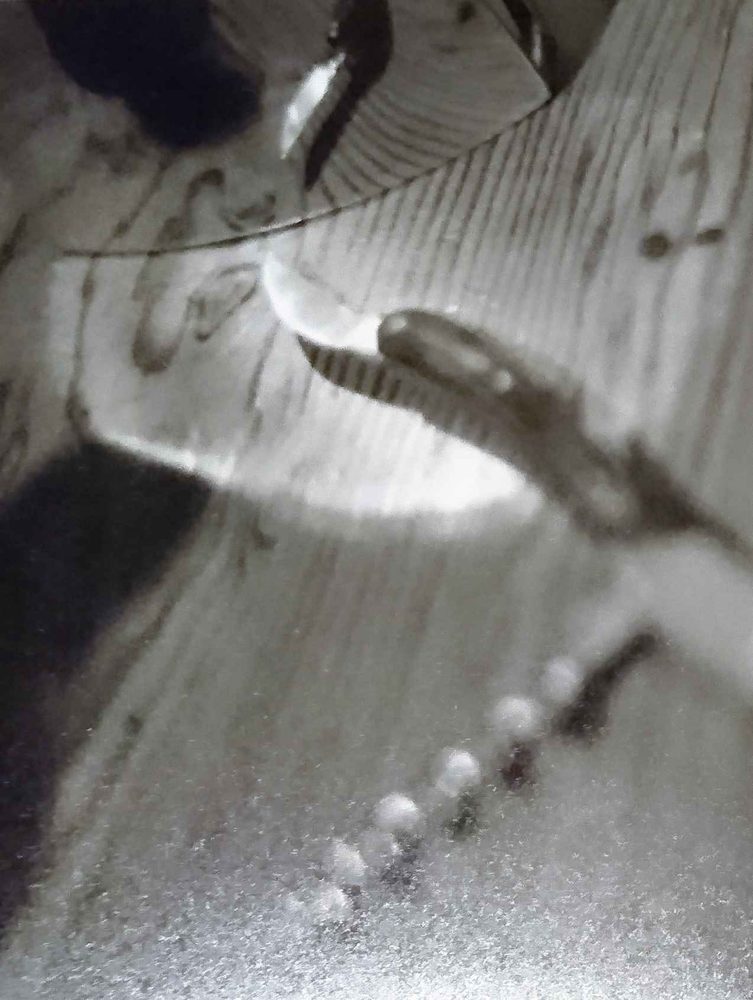
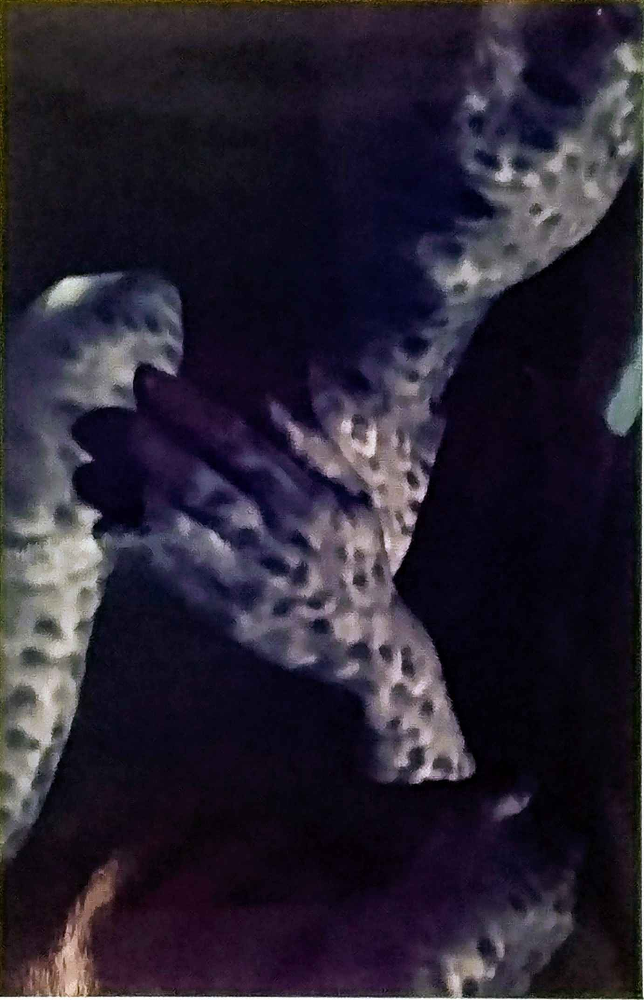

| Landmark: Perfect Crime (傳三郎) | |
| 大野浩 | |
| (2019) | |
第１部（'12 年秋・事件発生）
１
歌内 警部は部下と連れ立って、高層階からエレベーターで一気に地下駐車場まで降りた。
割り当てられた覆面車両に左右から乗り込み、エンジンを掛け、車列から抜け出し、幾何学的な螺旋をゆっくり上がっていく。打ちっ放しコンクリートの造形に、ぽっかりと四角い穴が空き、その先に鉛色の外界の空がみえる。
助手席に座る警部、歌内啓二はにんまりした。横にいる運転手は本人希望により先ごろ捜査課に異動した、新人の和戸 巡査だ。本日は捜査１課での初運転となる。
――これなら期待以上だ。なにしろ車中で推理を巡らせるには、信頼できる運転手が欠かせないんだ――
巨大なアンテナを背負った高層ビルの地下駐車場から、小さな警察車両が走り出る。回転灯を廻し、サイレンを鳴らす。通行人が振り返る。車速が高まり、視界の端を流れる街灯が、緊張感のあるリズムを刻みだす。
２
「こちら札幌119 番です。火事ですか？ 救急ですか？」
「救急です」
「お電話されているのは、患者さんご本人ですか？」
「いいえ、本人は出血して意識がないです。床が血の海で――」
「分かりました。すぐに救急車が向かいます。住所は石狩区、ひばりが丘Ｆ棟ですね。何階ですか？」
「12 階です。1201 号室、東側の角 部屋です」
――殺人もしくは殺人未遂、いずれにしても強行犯事件であることは明白だった。午後8 時51 分に119 番管制センターから情報が転送され、北海道警察本部では大所帯 の鑑識班が動きだした。捜査１課でも待機中の連中が出動の身支度を始めたころ、上司である捜査１課長から指示が下りた――
「石狩署管内で、男性が大量出血、意識混濁の状態で見つかった。捜査１課５係、歌内啓二警部は、直ちに臨場し捜査の指揮を執るように」
３
【歌内啓二警部と和戸巽 巡査】
札幌市のほぼ中心を出発した覆面車両が、札幌市の東の端を目指して走っている。ビルの隙間から、ときどきレモン形の月が見える。方角は、ほぼ真南だろう。月を見るとき、隣の運転席に座っている和戸巽巡査の顔を、まじまじと見ているような格好になる。
鼻の下の長そうな中年のおじさんとしては、ここで誤解されるとつらい。軽口で運転席の和戸巡査に話しかけた。
「南の空に、月が見えてるね」
「大丈夫です。警部、誤解してませんから」
明るくて理性的な声がすぐに返ってきた。
和戸巽巡査はスタイル抜群の美人だ。ボクより顔半分ぐらい背が高い。捜査１課に異動してくるのだから、勤務成績も優秀なのだろう。加えてユーモアも、なかなかだ――さて、これから向かう現場は所轄の石狩署から徒歩圏内にある。高層団地ひばりが丘、12 階建てマンションＦ棟1201 号室。最上階の角 部屋だ。
「現場は所轄の石狩署からだと目と鼻の先なんだな――ボクは、本部と石狩署の間を何十回も往復しているんだけど、時計でちゃんと計ったことがないんだよね。どうかな今日は、25 分？ いや30 分以上かかるか？ ハロウィーン月の金曜日だから――」
「30 分もかからないと思います。今日はあちこちで一斉取り締まりを実施しています。最近はそういう情報はすぐにネットで拡散しますから、道路はいつもより空 いているんですよ」
「ほう、そういえば君は交通部・交通機動隊からの移動だったね。交通部では何をしてたんだい？」
「白バイに乗っていました」
運転がうまいわけだ。ボクもいいところを見せなくては。
――そうだ――
思わず膝をぽんと叩いた。前から考えていたことがある。試すなら、いまじゃないか。今日の相棒となる所轄の島刑事とは旧知の仲で信頼関係ができている。スマートホンを取り出し、島刑事の連絡先を探して、指先でポチッと画面に触れる。つづいてスピーカーのマークを触れると、車内に呼び出し音が響いた。
「トゥルル――はい。島です」
ワンコールで島刑事が出た。グレイトだ！ 彼はいつも携帯電話の応答が非常に早い。
「もしもし、あ、歌内です――」
スピーカーでの会話が続く。和戸巡査がちらりとこっちを見た。車内でバディと情報を共有しておけば、説明の必要もなく動きやすいし、興味を持っていろいろ覚えられるだろう。
「毎度、ご苦労様です」
「どうもどうも。いま本部を出たところです。これから現場に向かうので、よろしく頼みます――それでね、島さんは現場が近いので、先に着くでしょう。着いたら、何でもいいですから、できることから始めちゃって下さい。なんか言われたときは、責任はこっちで取りますから」
「分かりました。調書の作成は、とりあえずまかして下さい」
15 分ほど経って、島刑事からのメールがスマホに届いた。題名が「調書・第１報」となっている。
「アプリを起動して、いま届いたメールを読み上げるから、和戸巡査も一緒に聞いてくれ」
「はい」
スマホのアプリが聞き取りやすい女性の声で読み上げてくれる。このあたりは最近、非常に便利になった。
「わたくし、花咲みちる が職場から帰宅しますと、玄関が解錠されていました。中では、知人男性が血溜りの中で倒れていました。胸が動いていたので呼吸はしていると思いました。手を取って声をかけましたが反応がなく、すぐに119 番通報しました。発信履歴は午後8 時49 分です。被害者の名前は四ノ宮元秀 さんです。四ノ宮さんはソフトウェア開発会社、㈱マジカルアプリの製品開発部・担当取締役で、私と交際中の人です。被害者は部屋の鍵を持っており、留守中に部屋に入って私の帰りを待っていたと思います。これまでも、会う約束のある日は、私の帰宅より１時間ばかり早く部屋に入り、シャワーを済ませて待っていることが何度かありました」
発見者の口述調書だ。班長の到着前にここまでできれば立派なものだ。貴重な初動捜査の時間を節約できた。
「会社重役と交際中の女性か――」
思わずつぶやく。すると。
「その女性が疑わしいんですか？」
と和戸巡査が聞いた。
「ちょっと匂うな。実行犯かどうかは判らんがね。被害者は会社重役。マジカルアプリといえばたしか、日本と米国で株式を上場しているＩＴ企業だな。第一発見者がその交際相手の女性で部屋の住人だった」
「マジカルアプリ、知っています！ 最近、たしかナスダックに上場したんですよ。重役ならＶＩＰですね」
「そのＶＩＰはいま虫の息だ。もし死亡に至れば、第一発見者は重要参考人。つまり容疑者扱いだ。実際の統計では最終的に発見者が犯人と判明する確率は３％ぐらいなんだがね。ここまでの範囲で、君はどんなやつがホシだと思うかね？」
「――」
「第一に居直り強盗だな。強行犯の典型的なパターンだ。つぎに、被害者に対する恨みや争いごとがあり、始めから危害を加える目的で侵入した。どうだ。これ以外に思いつくことはあるか？」
「かいもく 見当がつきません」
「えっへん」
もったいをつけているわけではない。最近、重要なことを言おうとすると、つい咳払いをしたくなる。たぶん年のせいだろう。
「被害者は瀕死の重傷。つまり、とどめを刺していないのだよ、今回のホシは！」
「はあ、でも100 ％とは言えないかもしれません」
「分かっている。ホシがとどめを刺したつもりで、刺せていなかった可能性もある。だが、ふつうに考えれば殺意はなかった」
「でも、ナスダック、重役の交際相手の女性が住人で、マンション最上階の角 部屋という言葉の並びに違和感というか――なんだか、そのう、ミステリー小説ぽい匂いがありますよね」
和戸巡査は前方注視したまま片方の眉を上げて言った。可愛くない！ 意外に頑固なところがあるな、ワトソン 君は。
「初動段階だからね！ １％は無視、無視。殺意なき強行犯なんだよ――空き巣犯が出会い頭に――という典型的な居直り強盗のような状況で、その場を逃れるために被害者を襲ったんだよ。そういう事件は計画性がゼロだ。あ、やっちゃったという感じだな」
「そうですか、でも私の直感はものすごく当たるので――」
気まずい空気だ。話題を変えよう。
「ところで、捜査１課への異動は本人希望と聞いたんだけど――白バイは楽しくなかったのかな？」
「はじめのうちは、仕事中にバイクで走れるのがうれしかったです。でもこのごろ思うんです。交通取り締まりは、人間の仕事じゃないって」
「ノルマが厳しいとは聞いているが――」
「運転はいつか機械がやるようになると言いますよね。そうなれば、白バイで違反車を追跡する意味はなくなります。統計データによる計算では、事故はいまの十分の一になるそうです。違反はもっと激減するでしょう？ 機械には『つい』や『うっかり』はないですから」
「まだ先の話だな。10 年後でも無理じゃないか？」
「そのときになってからでは遅いです。経験を積み年をとり、さあこれから後輩の指導を、というときに仕事がなくなる、もしくは内容が激変するんですから」
「前の上司には、そういう話をしていないだろうね」
「もちろんです。たしか、『凶悪犯罪の捜査に、強い使命を感じる』というようなことを言いました」
「それはよかった」
このときスマホの振動が伝わった。メールの着信だ。題名は「第２報」。
「被害者は発見時、バスローブを羽織っただけの半裸の状態で、背中から大量に出血し、すでに瀕死だった。35 万円の現金が入った財布、時価200 万円相当の腕時計など、所持品の指紋はすべて被害者本人のもの。現時点では室内の物色もなさそう」
35 万円の現金がそのまま残されていた。物取りのセンは消えた。
「聞こえたかね？ 被害者の持ち物らしき財布に35 万円の現金が残っていて、室内の物色もないそうだ」
「いよいよ、居直り強盗のセンは薄いみたいですね。どうでしょう、たとえば、口論から喧嘩になってつい力が入り過ぎた、なんて――」
「ほう。発想としてはおもしろい。グレイトだ。いまのところ、一番説明がつきやすいかもしれない。だが現実はふつう、おもしろい方向へは転がらないものだからな。それに、まだ物取りの可能性が消えたわけではない。侵入してすぐに被害者と出会って凶行に及び、そのあとすぐに逃げてしまったとすれば、室内を物色する時間はないからね」
そんな捜査事例を実際に見たことがある。もし捜査が長期化したら、すべての可能性を地道につぶしていくことになる。それはいまは、考えたくもないことだ。
３通目のメールが届いた。読み上げが始まる。
「現場マンションのドアは唯一の逃走経路で、かつ防犯カメラの視界に入る。したがって、防犯カメラ映像には犯人が映っていると思われる。ビルを管理している警備会社からデータを取り寄せ中」
「最近はこういうのが増えたね。犯人が防犯カメラに映っているんだと」
「それじゃ、推理の必要はないかもしれないですね」
「そうだとしたら面白くないな」
「迷宮入りよりはましではないですか？」
ワトソン 君、それ、禁句だ。
「警備会社から映像データを取り寄せ中だというから、すぐに判るだろう」
ボクは低い声で不快感を表した。
「――はい」
しばらくの間、沈黙が続いた。ときおり、この地区のランドマークとなっているホテルの建物が見える。いよいよ現場到着というころに、４通目のメールが着信した。題名は「第４報・被害者死亡」。長文だ。
「被害者は救急搬送中に死亡。ついに一度も意識は回復しなかった。被害者の倒れていた場所にスマホが残されており、通話履歴から、発見直前の12 分間、通話に使用されていたことが分かった。被害者側からの発信で、相手の番号はスマホの連絡先に登録されていた。登録名は『カーブ小日向』。花咲みちる によると、それは最近離婚した花咲みちる の前夫小日向 眞樹 のこと。小日向は現場マンションから道程 で300 ｍ、徒歩５分のビル２Ｆで『カーブ＝ドゥ＝ブワ』という名前のワインバーを経営している」
「被害者死亡か。もう少し発見が早ければ助かっていたケースだろう」
ついに殺人事件だ。カーブ＝ドゥ＝ブワの場所を携帯電話で探す。
「これから左折してひばりが丘通りに入ります」
和戸巡査はウインカーを出しながら減速した。
「ちょっと待ってくれ。カーブ＝ドゥ＝ブワ、事件現場より少し東のビル２階に入っているワインバーだ。現場には寄らずそっちへ直行してくれるかな」
行き先変更を告げると、和戸巡査の反応はすばやかった。ウインカーを止め、後続車がいないことを確認してから加速する。
「了解、行き先を変更します。ワインバー『カーブ＝ドゥ＝ブワ』は知っている店です」
４
午後９時15 分、和戸巡査の運転する覆面車両がサイレンと回転灯を止めて、ワインバー『カーブ＝ドゥ＝ブワ』の前の路上に、静かに到着した。
「あ！ 忘れてた。島刑事に――」
うっかりだ。もっと早く連絡しておくべきだった。
「トゥルル――はい島です」
「歌内です。予定を変更して、いま例のワインバーの前にいます」
「そうですか――ご苦労様です」
島刑事は現場で我々の到着を待っているのだ。すぐに電話を切るつもりだったが、何か言いたそうな空気感が伝わってきた。
「現場で合流する予定でしたが、すみません」
「いいえ。ただ、ちょうどいま、本部の安藤さんと所轄 の捜査員一名がそちらに向かっています。止めましょうか？」
なるほど、そういう状況か。使い道がありそうだな。
「――人員に余裕があるなら、このへんの目立たないところに――そうだ路上に覆面車両を停めているから、乗り込んで待機と指示して下さい。これから聴取に向かうので、ホシが逃走した場合に備えてバックアップしましょう」
「了解しました。それと、いまこちらの現場に、やっと監視カメラ映像が届きました。これから内容を見ます」
たしかにそれは、いま最優先の仕事だ。
「よろしく。中身について何か分かったらメールを下さい。それじゃ切ります」
道端に停車している覆面車両の中で、腕組みをしながら、ワインバーの看板を斜めに見上げた。
「小日向は絶対、何か知っている。これはたしかだ。そうだろう？ 看板の灯りがついているが、すでに逃走しているかもしれないな」
「可能性としては、逃げる、正直に話す、知らぬ存ぜぬで押し通す、嘘と本当を織り交ぜてのらりくらりとかわす、黙秘するの５択でしょうか」
「うむ。被害者が最後に掛けた電話の相手が小日向で、小日向と第一発見者の女性は最近まで夫婦だった。なにかこう、つい痴情犯を思い浮かべてしまうな。そういうホシはほとんど言い逃れはしない。さっき君が言ったように、明確な殺意はなく、争っているうちについ、という状況は起こりえるだろうねえ」
「ありふれた三角関係のもつれですか？ 通話履歴が物的証拠として採用されるだろうし、その気になれば冤罪を作るのはたやすいかもしれませんね」
冤罪。その言葉も禁句だぞ。
「捜査の常套手段としては、みなさんに伺っています、という常套句で、ソフトに始める。たまに厳しい質問をぶつけてプレッシャーを与える。つつかれたくないことは誰にでもある。さらに利害がからんでくると、つい嘘をついてしまうものだ。その嘘を徹底的な裏付け捜査であばいて降参させる」
「それぐらいは分かります。でも小日向を起訴するには、なぜ被害者が犯人（仮に小日向）に電話を掛けたのか。その必要に迫られた経緯を、検察側で説明できるようにしておく必要がありますよね？ そもそも、救急車があと10 分早く到着していたら助かった可能性が大いにあったんです。なぜ被害者は救急車を呼ばずに小日向に電話したのか。自白を引き出す鍵もそこだと思います」
「うむ、たしかに。そのあたりがさっぱり見えない。とにかく被害者は、自分の命より大事な用件があった。その何かを小日向に伝えようと――いや、逆に小日向から聞き出したいことがあったのか、頼みたいことがあったのか――小日向は直接話をしたんだから、当然、知っているはずだ」
「小日向にとって都合の悪いことなら、話さないでしょう。それに、小日向が今回の事件に直接関係していない可能性も、30 ％ぐらいあるような気がします」
おいおい頼むよ、ワトソン 君。
「ワトソ 、いや違った和戸巡査、本件事案の捜査班長として言っておく。その可能性は、絶対にない。捜査は確信をもってやらないと先へ進んでいかないんだ。君はさっき『口論から喧嘩になってつい』と言っていたが、喧嘩相手として真っ先に浮かぶのは小日向じゃないのかね？」
力を込めて言うと、ワトソン 君はおとなしく眉 を下げた。
「そうですか、分かりました」
「それじゃ行こうか。鍵は差したままでいい」
「はい」
午後９時30 分、ワインバーの聞き込み捜査を開始した。
５
【小日向と野見山】
今日はハロウィーン月の最終金曜日。みちる がコスプレでカーブ＝ドゥ＝ブワに来ると言っていた日だ。もともと少し露出気味なみちる のコスプレだけに期待してしまう。今夜は天使？ それとも魔女か。彼女には魔女のほうが似合いそうだ。そして今夜なら、許されるんじゃないかと思った――いや、のぞきの話なんだが。
一杯気分が手伝って、バーの扉の前で急に思いついた。もちろん警官の目に留まったならば、悪戯 では済まされない。２階の通路から下の路地を見る。通りのざわめきがいつもより大きい。何人か通行人がいるが、まあ大丈夫そうだ。どきどき、わくわく、音を立てないように扉を細く開けた。隙間から店内を窺うと、見知らぬ男性客が一人いた。
ほかには誰もいない。もちろん、お目当ての人も見当たらない。あ、これはまずい。初老の男が、真っ直ぐこっちを見ているじゃないか。カウンターの奥の壁際 に斜めに腰掛け、開きかけた扉の細い隙間をとおして睨みつけてきた。動転してすぐに扉を閉じた。もろに目線が合ったような気がした。少なくとも、扉が動いたことには気付かれた。後悔しきり。お祭りに浮かれた気分はすっかりしぼんでしまった。
――今月のはじめにみちる と遇ったとき、ハロウィーンの話題が出た。みちる が「私には何の仮装が似合うと思う？」と聞いた。
「天使――いいや、魔女かな。どっちでも似合いそうだね」と適当に答えた。
みちる は大いにウケた。
「それ、いいわ。嘘つきで高慢で底意地の悪い天使とか、あと、真面目で誠実過ぎる悪魔や魔女とか？」
調子づいて「今年のハロウィーンにはどっちが来るの？」と聞いた。
「だめ。当然、ネタはその日まで秘密よ」
「分かった、ハロウィーンの直近の金曜日には絶対来るから」
こんな経緯 で、約束が成立した。酔ったときの話だから、むこうは忘れているかもしれないのだが――
再度、ゆっくり扉を開けてみる。白髪交じりのおじさんは、さっきと同じ椅子に座っていた。顔を壁のほうへ向けている。真っ黒に日焼けした横顔と首筋だけが見える。壁には時計が掛かっているが、時間を見ているのかどうかは不明だ。
たんに気まずいだけだろう。手持ちぶさたに、壁の時計と手元の腕時計を見比べる。どっちもクオーツだ。午後８時25 分。分単位ではぴったり合っている。
店内をぐるりと見渡した。オーナーの小日向が見つからない。
しかたがないので、例 のおじさんから店内で一番遠い場所、カウンターバーの入り口に近い側の端の席に腰を下ろした。
彼は扉が開くよりずっと前から入り口の様子を窺っていたと思われる。何のためにそうしていたのか、ぜんぜん思いつかない。どうせ、よからぬことに違いない。こっちは軽犯罪だが、たぶん向こうのはもっとヤバいことだ。
あいかわらず彼は顔をそむけて、顎に手をやって考え事をしている。いや、そんなふりをしているだけかもしれないが――さいわい、こちらを見ている様子はない。斜め後ろから何回かに分けて盗み見た。
とにかく日焼けが激しい。鼻から下、それと首筋。ゴルフ焼けだとすれば毎日ゴルフ・コースに通えるほどの結構なご身分かもしれない。いや、ゴルフなら手袋の跡 が白く残るはずだが、それがない。屋外の仕事でヘルメットか帽子のようなものを被るが、手袋はしない。職業は、まあ農業とか、交通整理、そんなところだ。
それにしても、オーナーはどうしたんだ？ このおじさんに声をかけるのは気が重い。
しかたがないな。ゆっくり深呼吸をした。すると、まるで気配を察したように、彼は突然席を立ち、あっという間にトイレに駆け込んでしまった。
入れ替わりに、酒蔵の入り口から小日向が顔をのぞかせた。
「野見山さん、いらっしゃい。お待たせしてすみませんね。ちょっと捜し物があって――あれ、あの人どうしたのかな」
「日焼けした人のこと？」
「そうです」
「トイレに入っていったよ」
「そうですか。すみません。もう少しだけ待ってもらえますか？ 年代物の白ワインなんですが、一番奥の方に入れちゃったみたいです」
「ああ、いいけど、何か――」
話が途中なのに、小日向は酒蔵に引っ込んでしまった。何か１杯、飲ませてくれと言いかけたんだが。バーに来ているのに飲み物もない。みちる も来ない。トイレからは、ぶつぶつ言う声がときおり聞こえるが、何を言っているかは聞き取れない。
スマホの Wi-fi スイッチをオンにした。アクセスポイントの一覧、そしてすぐに「接続済み」の Wi-fi マークが表示された。暇をつぶすにはこれだ。「アクセス急上昇中！」の無料動画のタイトルが表示される。このタイトルがやたらとキャッチーで、しかし、動画の中身は前置きばかりが長い。
所詮、無料である。驚くような暴露や可愛い動物の仕草 など、つぎつぎ切り替えた。「はは！」という笑い声が聞こえたのはそんなときだった。
壁の向こうの２人のうち、どちらかの声だ。音のこもり加減から、トイレの中の不審人物と思われた。腕時計を見ると、午後８時38 分。
――９時になったらここを出ていこう――
このときは、そんなふうに思っていた。突然、トイレから件 のおじさんが出て来た。おじさんは猛スピードで僕の背中の後ろを駆け抜けた。振り返ると店の入り口の扉が油圧でゆっくりと閉じた。
６
「何だ？ あれは」
首を傾げる。酒蔵にこもっていた小日向が出てきたのはそんなタイミングだった。
「どうもすみません。お待たせしちゃって」
両手で大事そうに抱えている透明な瓶。白いラベルが貼られている。中の液体はかなり濃い飴色だ。
「ずいぶん待たされたよ。そうだ、トイレに入ってた人は帰っちゃったけど、お金もらわなくていいの？」
「いいんです。ワインの注文を受けたんですが、まだ何も出してないので。ご心配をおかけしました」
「トイレの中、調べた方がいいかもね。爆弾でも仕掛けられていたら、たいへんだ」
「あっはは――大丈夫ですよ」
小日向の目は笑っていない。
「それ、どうしたの？ 白ワインかな」
「ええ、まあ。さっきいなくなっちゃった人に、ご注文いただいて捜したものです。待ちきれなくて帰られてしまったようですが」
小日向はこちらからラベルが見えるようにワインをカウンターに置いた。それから、トイレのドアを開け、中に入っていった。
「飲ませてくれるの？ 安くしてよ」
トイレの中まで聞こえるように大きな声で言った。返事はない。白いラベルはフランス語で書かれているらしい。もちろん、さっぱり読めない。葡萄の収穫年が'76 年ということだけは分かった。それはちょっとすごいことなのかもしれない。
小日向はすぐにトイレから出てきた。笑顔を見せているから、問題はなかったのだろう。
「ご迷惑をおかけしたお詫びに、ぎりぎりまでサービスしたいところですが――ちょっと原価がお高めでして、１本十万円でも、真 っ赤 っかの大赤字なんです」
これには、苦笑いをするしかなかった。カウンターに置いてあるワインリストにはそんな高いワインは載っていない。この店の酒蔵には高級ワインの大量在庫があるのだろうか。聞いてみたい気もしたが、へたをすると引っ込みがつかない。
「今日はやめとく。１杯七百円の赤でいい」
「かしこまりました」
「ところでオーナー、ここのお客さんでみちる っていう人、知っているよね」
「――ええ、まあ、常連さんですから」
「今日、来るって言ってなかった？ ハロウィーンの仮装で」
「ああ、そういう話はあったんですが――無理ですよ。うちみたいに狭い店じゃ」
「えっ！ オーナーが断っちゃったのかい？ 何だ、楽しみにしていたのに」
がっくりだ！ もういい。のどが渇いていたので、思わず一気に飲んでしまった。
「ワインのおかわりは、いかがです？」
話題を変えたいオーナーは、媚びた笑いを浮かべた。
「ああ、もう一杯いっとこうか」
差し出したグラスに、小日向は２杯目の赤ワインを注いだ。
７
小日向が、たしかこれで６杯目になるワインを注いでいた。途中で手が止まる。
「いらっしゃいませ」
そう言って小日向は入り口の方を見た。振り返ると、誰かが店の扉を少しだけ開けて、のぞき込んでいる。
「北海道警察です。ちょっといいですか？」
のぞきがばれたのか？ そんな、まさか。
男は店内に入り、例の飾りの付いた手帳を開いて見せた。捜査１課だ。はじめて見る私服の刑事――どうりで独特の雰囲気を放っている。
捜査１課はのぞきの捜査などしない。そうかこれは面白くなりそうだ。察するところ、さっきのおじさんと無関係な事件ではあるまい。一気に謎が解けるか。
「何が、あったんですか？」
小日向が眉間にしわを寄せているのを見たのははじめてだ。何か事情があるのか。いや、警察が嫌いなだけかもしれない。
刑事をもう一度見かえした。ちょっとコロンボ似の刑事だ。その刑事が僕との距離を１㍍まで詰めて止まった。続いてすらりとした女性が入ってきた。女性の刑事か？ 最近では女性刑事もドラマには出てくるが、本物を見るチャンスがあるとは思わなかった。興味津々だ。とはいえ、あまりじろじろ見たら悪いかと思って、ちらっと見ただけで我慢しておく。
「本日、この付近で殺人事件が発生しました。こちらの方は、お客さんですか？ 失礼、私、こういうものです」
ブレザーの男が、名刺を２枚出してカウンターに並べて置いた。北海道警察本部、警部・歌内啓二（utanai keiji）と書かれている。「撃たない刑事」とは、おもしろいやつだ。それにしても、警部というのはかなり偉いんじゃないか？ 聞き込みはもっと下っ端がやるもんだろう。
「ええ、常連さんです」
僕がしばらく名刺に見とれていると、小日向がかわりに答えた。
「できたら、お名刺をいただきたいのですが」
歌内警部が言った。僕はちらりと警部の目を見て、頷いて見せた。名刺なら持ってきている。面倒くさいが断れば免許証の提示とか、余計に面倒かもしれない。
「ちょっと待って下さい」
僕は細々したものが詰まったセカンドバッグを探りはじめた。
「あなたは？」
「店長の小日向です」
「花咲みちる さんと、今年、離婚されたとか？」
「それがどうかしましたか？」
それを聞いて、思わず名刺を探す手が止まった。刑事はたしかに「みちる さん」と言った。
「ついさっき、花咲さんのご自宅で殺人事件がありました」
「遠回しな言い方はやめてもらえませんか？ それは、つまり、みちる が死んだということですか？」
小日向がついに声を荒らげた。
「恐縮ですが、こちらもいま、初動捜査で、非常に急いでいますのでご協力願います。そちらからの質問は、ちょっと我慢して下さい。ほとんど、詳しいことはこれから調べるという段階ですので――まあ、みちる さんは生きていますし、怪我もいっさいありませんがね」
「まさか、子供が被害者なんてことは？」
「それも違います――お芝居抜きで、本当に、ご存じないんですね」
「あんた、失礼な人だな！」
被害者がみちる でなかったと聞いて小日向は安堵しているようだ。僕はため息をつきながら、小日向の顔を見直した。そうか、子供までいたとは――
「黙ってこちらの話を聞いてもらえばすべて明らかになります。では一つめの質問です。小日向さん、ええっといまから１時間ほど前、午後８時半ですが、電話が掛かって来ませんでしたか？」
「ああ、そうですね」
小日向は肯定した。すると、刑事の渋面が少しほころんだ。小日向が酒蔵の中で電話していたとは、知らなかった。
「二つめの質問です。そのとき使ったのはあそこにある携帯電話ですか？」
刑事はキッチンの隅で充電中らしき携帯電話を指さして聞いた。
「そうです」
「ちょっと、見せていただけますか？」
「見るだけですよね。持って行かれたら困ります」
「通話記録だけ確認して、すぐにお返しします。ただし犯罪の証拠になるようなものが残っていた場合は別です。殺人事件の捜査ですのでご理解下さい」
「かんべんして下さいよ」
小日向はしぶしぶ携帯電話を差し出した。
「ちょっと、画面の写真を撮らせてもらいますよ。和戸君、１枚撮ってくれるか」
刑事は受け取った端末の画面を女性刑事のほうに向けて言った。
「はい」
和戸君と呼ばれた女性刑事は、ショルダーバッグからカメラを取り出して写真を２枚撮り、モニターで確認した。
「はい、大丈夫です」
「三つめの質問です。12 分間ほど、話をされていたようですが。相手の方の名前と話の内容を、教えていただけますか？」
刑事は端末を小日向に返しながら言った。
「それは、こちらのお客さんにはちょっと――」
１時間前といえば、ちょうど、日焼けしたおじさんがトイレに駆け込んだタイミングだ。そのころ、おじさんも多分、中で電話していた。小日向も酒蔵の中で電話していたのか。いや、小日向の携帯端末を借りておじさんが電話していた？ きっとそうだ。もうすこしで謎が解けそうだぞ！ だが小日向は帰れと言っている。ちぇ、残念だ。
「いや、お客さんにも、もう少しだけ、ご協力をお願いしたくて――分かりました。それじゃ、こちらを先に済ませましょう。四つめの質問です。お客さん、こちらには何時ごろからいらっしゃいましたか？」
「ここに座って時計を見たら８時25 分でしたから、入ってきたのはその３分前の、22 分ぐらいじゃないですかね」
俺もアリバイを調べられるのか？
「小日向さん、たしかですか？」
「それぐらいでしょう。時計を見ていなかったので、はっきりしたことは言えませんが」
これは明らかに嘘だ。小日向は僕が入店したときの様子を見ていない。そのとき彼は酒蔵に入っていたのだ。
「電話がつながったのが20 時27 分ですから、その５分前に来店されたということですね」
「そうですね。ちなみに、それだとアリバイになるんですかね」
何か面白い話を引き出せれば、と思って誘いをかけてみた。もちろん、本当に心配しているわけではない。
「いや、まあ、どちらにしてもいまの段階では――現場の鑑識もまだ作業中ですので」
――ふん――
面白くない。この刑事は聞くだけ聞いて、ちっとも情報をくれない。
「五つめの質問です。それからいままでの間に人の出入りは？」
「今日はいまのところ、こちらのお客さん、野見山さん一人だけですよ。常連さんはときどき８時半ぐらいに来られることもあるんですが、公式には９時オープンですから。うちは基本的に深夜営業なんで」
刑事の質問に、かぶせるように小日向が答えた。小日向はさっきの挙動不審なおじさんのことを隠したいのか。つまり小日向とさっきのおじさんは、この事件に深く関わっている。それはもはや疑いようもない。共謀犯という言葉が頭に浮かんだ。だが不思議にヤバイ感じがしない。
「ほかには誰も来ていないですよ」
とっさに小日向と口裏を合わせた。参考人がちょっとした隠し事をしただけでは罪にはならないと聞いたことがある。しばらくこのネタは温存しておこう。刑事に協力したくなくなったし、小日向に貸しを作るのも面白い。
カウンターの上に２枚並んでいる警部の名刺の１枚を取り、かわりに自分の名刺を置いた。㈱マジカルアプリ、プロジェクト推進部。僕は製品の説明書などを製作する部署の主任として勤務している。ここひばりが丘から10 分ほどの、つばき谷という場所には百人近い社員が住んでいる。家族を勘定に入れればその２倍を越えるだろう。ひばりが丘の人間ならマジカルアプリという社名はたいてい知っているし、その界隈はマジカルアプリ村と呼ばれることもあるぐらいだ。
「そうですか、では、野見山さんはこれで結構です」
愛想のない刑事は表情も変えない。有名な会社ですね、ぐらいのお世辞も言えないのかね。ふん。君たちの知りたがっていることを僕が知っている可能性もあるというのに。
「すみませんでした。今日の会計はいいですから」
小日向は目でありがとうと言っている。
「ああ、そう。それはどうも。それじゃまた、近いうちにね」
僕は止まり木から降り立ち、いやらしい役人たちには挨拶をせずに店を出た。
８
なんという夜だろう！みちる が殺人事件に巻き込まれた。しかも、この僕が偶然居合わせた目撃者として担当刑事と名刺交換する羽目に――だが、これはチャンスかもしれないぞ――何か、みちる を助けるために僕ができることはないだろうか？
いろいろ考えてみた。悲しいが、できることなんか何もなかった。
店を出て少し歩いたところで立ち止まり、後ろを振り返る。何とも、しつこそうな刑事だった。いまごろ小日向をねちねちと尋問しているに違いない。「近いうちに」といったとおり、明日にでも、また様子を見に行ってみよう。
ふたたび新札幌駅を目指し、歩き出す。すれ違う人の目線が気になる。おおかた、通行人は仕事帰りで、ひばりが丘に向かっているのだ。僕だけが反対に歩いている。きっと変なヤツだと思われている。
この道は、ＪＲ新札幌駅とひばりが丘という通り名の住宅地をつなぐ裏道だ。道沿いに二、三軒の居酒屋があり、看板がちらほら灯っている。
ひばりが丘には自宅も仕事の用事もない。
カーブ＝ドゥ＝ブワはフランス語で「森の酒蔵」）を意味する。場所は駅から約400 ｍぐらいの８階建て、住居店舗兼用ビルの２階。最初は会社の上司に連れて来られた。上司というのは、いまやマジカルアプリの社運を背負うプロジェクトを担当する四ノ宮取締役だ。みちる に僕を紹介したのも四ノ宮さんだった。それ以来、僕は一人でカーブ＝ドゥ＝ブワに通うようになった。
月が明るい夜だ。あと二、三日で満月だろう。バーを出てから100 ｍ近く歩くと、背の高いビルがときどき見え隠れした。あれは、駅の向こう側に建っている超高層のホテルだ。距離はここから直線でざっと330 ｍぐらいか。高さは115 ｍというからこの付近では抜きんでた高さだ。いわゆるランドマーク――
「ランドマーク」とつぶやいたとき、ある考えに囚われた。こちらから見えるということは、向こうからもこちらが見えているのだ。最上階の暗い部屋あたりが気になった。もちろん窓の中はまったく見えない。僕の視力は1.5 だ。とはいえ夜間の300 ㍍先じゃ無理、いやたぶん昼間でも無理だ。
望遠鏡があれば話はべつだ。当然だが、いまその種の道具は手元にない。
近景に目を移すと、裏道沿いの小さな雑居ビルの前に「ちか道」という手書きの看板がひっそりと置かれていた。居酒屋らしい。
聞き覚えのある名前だ。店の前まで行くと、人の声がもれ聞こえてくる。腕時計を見る。午後９時42 分。まだ夜は長い。暖簾をくぐると目の前に飾りガラスと格子 があり、その向こう側には、柔らかい灯りが透けている。
格子の引き戸をゆっくりと開けた。奥の小上がりに数名の男女がいて、賑やかだ。手前にオープンキッチンとカウンターがあり、カウンターの一番手前の席に女性客の背中が見える。
「いらっしゃいませ。お一人様で？」
「ああ、大丈夫ですかね？」
「こちらの席でよろしければ」
大将が女性の横に一つ空けた隣りの席を指した。西洋の魔法の夜まであと５日。最初に後ろ姿を見たときから、薄い予感があった。その女性はみちる だった。
９
【ひばりが丘Ｆ棟・島刑事】
「島さん、凶器を含め、加害者側の遺留品は絶望的だな。靴のまま屋内に入り、入り口から被害者の倒れていた場所まで直線的に移動している。部屋の中を歩き回った様子がないんだ。凶器は加害者が持ち帰ったんだろう」
鑑識の班長が声を掛けてきた。
「分かりました。歌内さんにそう伝えます。被害者側はどうですか？」
「被害者の毛髪や指紋はあちこちから出てきた。事件の直前に被害者は風呂を浴びていたよ。あと、倒れていた場所の周辺には二名が争った跡が明瞭に残っていた。にもかかわらず加害者の毛髪が残っていない点については、加害者は丸坊主か、頭に被り物をしていたのじゃないかと――ま、これは鑑識の見解だ。参考にしてくれ」
「分かりました。それも伝えます」
今度の事件 では、はじめて捜査班の指揮を執っている。さきほど歌内警部から急に電話で任命されたのだが、オレは所轄の人間なので、本来はありえない仕事だ。ちょっと舞い上がっている。
「あの、私はいつごろ解放してもらえるんです？ 実家に子供を預けているので――」
花咲みちる は疲れた表情で言った。血なまぐさい殺人現場に閉じこめられているのでストレスは相当のものだと理解できるが、まだ用事がある。
「いま警備会社の方に、監視カメラの映像を請求していて――もうすぐ着くと思うんですね。それを見ればだいたいのことが分かるはずです。それまではご協力お願いします」
「トゥルル」
携帯電話 に着信があった。スマホとblue- tooth のイヤホンがペアリングしてあるので、軽くタッチするだけで応答できる。
「――はい島です」
「歌内です。予定を変更して、いま例のワインバーの前にいます」
いつもながら、勝手な人だ。
「そうですか――ご苦労様です」
「現場で合流する予定でしたが、すみません」
「いいえ。ただ、ちょうどいま、本部の安藤さんと所轄 の捜査員一名がそちらに向かっています。止めましょうか？」
歌内警部に伺いを立てた。そのとき、現場の警備に当たっている所轄の巡査が声をかけてきた。
「島さん、警備会社の方がデータを持ってこられました」
室内の時計を見る。午後９時16 分。この時計の正確さは、さっき確認したので間違いない。
「いま電話中。受け取っといてくれ――」
「了解」
所轄の巡査は駆け足で去った。
「――人員に余裕があるなら、このへんの目立たないところに――そうだ路上に覆面車両を停めているから、乗り込んで待機と指示して下さい。これから聴取に向かうので、ホシが逃走した場合に備えてバックアップしましょう」
「了解しました。それと、いまこちらの現場に、やっと監視カメラ映像が届きました。これから内容を見ます」
「よろしく。中身について何か分かったらメールを下さい。それじゃ切ります」
歌内警部から掛かってきた電話は、一方的に切られた。直ちに捜査員の無線を呼び出す。
「こちらひばりが丘現場、ワインバー参考人聴取の件につき、変更がありました」
「こちら安藤です。変更の内容を指示願います」
「現在位置は？」
「ワインバー近くに到着しています」
「路上に覆面車両が見えますか？」
「――あれですね。グレーの車が見えています」
「搭乗者は歌内警部と一名ですが、両名はこれからワインバーの参考人聴取を行う。安藤、芝木の両名は、覆面車両の中に入ってバックアップ待機。ホシが逃走した場合に備えるように」
「了解。両名はバックアップ待機します」
「よろしく」
通信を切ると、ずっと待ちかまえていた所轄の巡査が、プラケースに入ったＤＶＤを差し出した。
「班長、映像データです。ＭＰＥＧ形式で入っているそうです」
「からかうな。おれは班長じゃない」
本部の人間がいるので気を使う。
「は、失礼しました。島班長代理」
リビングテーブルに置かれたノートパソコンにＤＶＤを入れると、ファイル一覧にデータ名がいくつか表示された。「12 階・通路側・監視カメラ19: 00 ～21: 00 」を選択して「倍速再生」のボタンを押すと監視カメラ映像の早回しが始まった。
●午後７時０分から40 分間は、注目すべきことは何も起こらなかった。
その間に、現場と同じ階の住人らしき人物がエレベーターから降りて自宅の鍵を開け、入っていく様子が２回映し出された。監視カメラはエレベーター前の通路の天井に取り付けられているので、帰宅する住人らしき人物はみな後ろ姿だ。
ビルの最上階の角 部屋である。ビルは12 階建てで、階段は両サイドにあるが、エレベーターは現場の部屋とは反対側に１基あるのみだ。つまり、現場の部屋の前を通り過ぎる者は現場の部屋の住人か、住人に用事がある人に限られる。
●午後７時40 分の箇所で動きがあった。巨体の男がエレベーターを降りて現場の部屋の前まで歩いていく。ドアの高さを超えることから190 ㎝はある。部屋に入る直前、ドアの方を向いたときの横顔をストップモーションにした。
「すみません、この横顔のかた――どなたか分かりますか？」
ノートパソコンをくるりとまわして花咲みちる に見せる。
「カメラが遠くて顔があまりはっきり映っていないですね。でも輪郭とか鼻の特徴は四ノ宮さんです」
「そうですか。ちょっと巻き戻しますね」
みちる の横に行ってパソコンを操作し、巨体の男がエレベーターを降りたところから、通常の速度で再生した。
「何か分かることはありませんか？」
「体格が、あれぐらい大きな人で、歩き方というかリズムも同じなので、四ノ宮さんに間違いないと思います。服装も一致していますし」
「ありがとうございます。もう少しで終わりますのでお待ち下さい」
花咲みちる は無言で小さなため息をつき、目を瞑った。
●午後８時８分、二つめの動きがあった。
階段から出てきた人物は、完璧な扮装のピエロだった。
頭部はすっぽり被われている。体型は、ほぼ中肉中背の筋肉質。男性と見て間違いない。目のあたりは半透明の樹脂で覆われていて個人の特定は無理だ。
ピエロが一瞬、こちらを向いた。まるでカメラの位置をたしかめるように、真っ直ぐのカメラ目線を投げて頷いた。気のせいかもしれない――そう、気のせいだろう。
ピエロは戸口のほうに向き直り、大袈裟なアクションでドアチャイムを押した。ドアに身体を密着させ、耳に手を当てて音を聴くような仕草も演技臭い。誰かがドアを開けてくれるのを期待するようにしばらく頑張ったが、ついにあきらめ、首を傾げながら階段の方に消えていった。
ピエロの登場時間は３分ほどだった。
●午後８時16 分、三つめの動き。ピエロの独演。２幕は一幕のような芝居臭さやオーバーアクションがなく、ナチュラルな動きだ。直感で別人と思う。体つきも微妙に違い、やや小柄な印象。これぐらいでは、法廷では証拠にならないだろうが。
ピエロはドアチャイムを押したあと、いきなりドアノブを引っ張った。なぜかドアはすんなり開いた。蝶の幼虫のような毒々しい扮装のピエロが、易々 と部屋の中へ入っていく。
●午後８時21 分、四つめの動き。ピエロの独演、第３幕だ。
ドアが開きピエロが手にナイフのようなものを握って飛び出した。スロー再生でよく見ると血しぶきが衣装の足に付着している。犯行直後の生々しさだ。あわててころびそうになるアクションが真に迫っている。これも演技なら――いや、こんな演技ができるヤツはこれまで見たことがない。
ピエロがカメラに向かって走り出した。かと思うと急に立ち止まり、１分後、くるりと向きを変えて反対方向に駆け出した。
実行犯は、そのまま現場のドアの前を通り過ぎ、階段に駆け込んで消えていった。
●午後８時48 分、五つめの動きがあった。例によって後ろ姿。目の前にいる花咲みちる と同じ服装と髪型だ。同一人物だろう。
●午後８時55 分、交番から駆けつけた警官が登場した。続いて救急隊員。捜査現場の見慣れた動き。このあとには自分が写り込んでいる箇所も出てくるだろう。
現在のところ、実行犯のピエロと花咲みちる が同一人物である可能性は、物理的には否定できない。しかし、花咲みちる の華奢な体つきは、どう考えてもピエロの映像とマッチしない。
ほかに関係ありそうなデータとしては「12 階・ベランダ側・監視カメラ19: 00 ～21: 00 」というのがあり、早回しでチェックしたが、何も出なかった。
歌内警部に連絡だ。
「はい、歌内です」
「お疲れさまです。島です」
「お疲れさま」
「監視カメラ映像のチェックが一応終わりました」
「どうですか？」
「実行犯が逃走する場面と思われる箇所がありましたが――それが、全身ピエロの扮装なんですよ」
「それ、すぐに見たいなあ」
「クラウドに上げて、リンクと見所の時系列一覧をメールします。５分待って下さい」
「ありがとう」
「それと、第一発見者のことですが」
「まだそこにいるのか？」
「はい、実家にお子さんを預けていて、今夜はそっちに泊まりたいそうです」
「判断は任せる」
「注意事項を説明してから、行ってもらいます」
「了解」
花咲みちる のほうに向き直った。
「花咲さん、長らくお留め置きしてしまい、申し訳ありませんでした。現場はこんな状態ですから、実家の方へ行かれて構いません。ただ、いつでも連絡は取れるようにしておいて下さい。今後、それ以外の場所へ移動されるときはご一報いただくように――君、車に乗るところまで、送ってあげて」
花咲みちる は頷いて荷物を持ち上げる。現場警備の警官が付き添う。室内の時計を見ると午後10 時30 分をまわっていた。
１０
【内偵尾行を指示・歌内警部】
小日向は今回の事件で初っ端に浮かんだ重要参考人だ。その経営するワインバーは、殺人現場から徒歩５分という近場にある。所轄刑事に現場の割り振り仕事をすべて押しつけて、新人の刑事を伴い自ら乗り込んだ。バーのドアを開けると、入り口に近い席に禿頭 の客が陣取っていた。
少しやりとりするうちに、この客はひばりが丘で殺人事件が進行中という微妙な時間帯に、たまたまここに居合わせたらしいと分かった。
のみやまという男に職務質問するかわりに、道警本部捜査１課、警部、歌内啓二と印刷した自分の名刺を出して交換を求めた。のみやまはしばらくの間、バッグの中身をもそもそとかき混ぜていたが、やがて名刺を取り出しカウンターの上に置いた。もちろん、名前のほうには興味がない。
――知っている会社だろうか――
名刺を見た瞬間に、まさかと息を呑んだ。印刷されていた社名はマジカルアプリ、被害者が役員を務める会社だったからだ。
「そうですか、では、野見山 さんはこれで結構です」
精一杯、平静を装ってそれだけを言った。初動捜査で重要参考人の聴取を行おうとした矢先に、被害者と勤務先でつながる人物が現れたのだ。
「すみませんでした。今日の会計はいいですから」
小日向がうながす。
「ああ、そう？ それはどうも。それじゃまた、近いうちにね」
禿頭の野見山肇 は、小日向の方を向いて愛想笑いをし、片手をひょいと挙げた。そして我々捜査員とは目を合わさずに店を出ていった。
「和戸君、証拠品袋を一つ出してくれ」
「はい」
和戸巡査がショルダーバッグから透明なビニール袋を一枚取り出した。
ボクは野見山が置いていった名刺の端をつまみ上げ、和戸巡査がひろげている証拠品袋の中に落とした。和戸巡査から証拠品袋を取りあげ、中の名刺を指さして目配せする。感情を顔に出さない彼女だが、くりくり動く瞳が驚きを表している。
事件の印象が大きく変化した。マジカルアプリ役員・殺人事件捜査本部――そんなタイトルが浮かび上がる。
野見山は微妙な存在だ。情報を引き出せるかもしれないが、捜査情報を彼に与えてしまうと、マジカルアプリに筒抜けになる危険がある。さっきの様子では野見山はまだ四ノ宮元秀 が殺害された事実を知らない。それも若干、疑わしいが、本当に知らないとしたら、まだ知らせるべきではない。逮捕は論外だ。となると、いまは泳がせるしかない。
「ちょっと失礼。和戸君はここで待っていてくれ」
証拠品袋をポケットに入れて店の外に出ると、野見山が階段を降りる足音が聞こえる。覆面車両の運転席には見知った捜査員が座っている。階段の音はすぐに消え、さらに数秒後には、窓から見事に禿げ上がった野見山の後ろ姿を確認できた。野見山の歩いていく方向は、新札幌駅方面で、その向かう先には、のっぽ のホテルが見える。通りには灯りを落とした乗用車が停車している。階段を駆け下りて、その車の後部座席に滑り込んだ。
「いま出ていった男の顔を見たか？」
覆面車両の助手席には部下の安藤と所轄刑事らしい一名が待機していた。
「ばっちりです。動画も撮りました」
「見せてみろ」
助手席に置いていたパソコンを取りあげてスイッチを入れた。野見山の歩く姿が映っている。
「よし。角度の違う顔と全身が撮れている。画質も充分だな」
ポケットから証拠品袋を取り出す。名刺を車内の捜査員に見せた。
「ボクはワインバーに戻る。君たちはいまからこいつを内偵尾行するんだ。いいな！ 尾行しながら、所轄から必要なだけ応援を出すように島君に言え。名刺の会社を見ろ」
「マジカルアプリ。あ――」
「そう。被害者の勤務先だ。頼んだぞ」
「尾行はあんまり得意じゃないんです」
安藤が泣きそうな顔になった。
「そういえば何度かミスがあったな、ばれる、見失う――今回のターゲットは相当飲んでいるから、バレることはないぞ。それに特徴のある頭だから、見失うこともない。今度こそ、汚名返上だ。行け！」
２人はあわてて車を降り、いま野見山が曲がったばかりの角 を目指して駆け出した。
１１
【尋問・歌内警部】
店内に戻ってみると、和戸巡査がカウンターの止まり木席に腰かけ、ワインのボトルに透明な証拠品袋をかぶせて、その上から眺めていた。ボクが近づくと、すぐに椅子から飛び降りた。
「失礼しました」
「ボクがいないあいだに、何をしていたのかね？」
「素敵なワインが安かったので、私が自費で買い取りました」
「安いって、いくら？」
「10 万円、ぽっきりです」
「ワインに10 万円？ 恐ろしい！」
「ネットで調べたらシャトーディケム'76 年の相場は20 万円近いのでバーゲンですよ」
どういう金銭感覚なんだ――
新人のくせに大胆な！ 勝手に証拠品袋に入れているのはどういう――そのワインに証拠価値があるというのかね――と、小日向の前で聞くのはさすがにやめておく。
「失礼しました。本部から連絡が入ったもので。小日向さん。さっき中断した三つめの質問ですが、もう一度伺います。電話で12 分間といえば結構長い時間です。誰とどんな話をしていたんですか？」
「何でそんなこと聞くんですか？ 事件と何の関係があるんです？」
そもそも、警察が通話の事実を知っているのは、キャリア提供会社に照会して履歴を調べたからに決まっている。裁判でも物的証拠として採用されることは確実である。しかし、尋問のきっかけとして、小日向からその名前を聞き出す必要がある。しらばくれるなら、任意同行、場合によっては逮捕状の請求も――
「その電話の相手が、この事件の被害者だからですよ。なんなら、続きは署で伺うことにしましょうか？」
「えっ！」
それまで伏し目がちだった小日向が、はじめて睨みつけるようにこちらを見た。
「――あの人が、死んだんですか――テクノパークに入っているＩＴ企業の重役さんで、四ノ宮元秀という人ですよね。でも、うちにとってはただのお客さんです。あまり詳しいことは知りませんよ。仕事の話なんかしたこともないですし」
和戸巡査と目を合わせた。ボクが首をひねると、和戸巡査が頷いた。
何だろう、一口にいえば芝居臭いのだ。
四ノ宮元秀、その名前を小日向から引き出すために、回りくどい話をしてきた。今度こそ、じつはと白状する場面を期待した。ところが小日向はあいかわらずだ。つかみどころがない、というかセリフを言わされているような感じだ。
「死にかけていた被害者が、他の誰でもない、あんたに電話してきたんだ。ただのお客さんなんてことがあるのか？」
思わず声が大きくなった。
「被害者はあんたの別れた妻のマンションに、留守中に上がり込んで、裸にバスローブだけを着た状態で、何者かに刺された。第一発見者は帰宅した花咲みちる 。発見時すでに被害者は瀕死だった。救急車の中で心肺停止。死亡確認まで一度も意識は戻らなかった」
「知りませんよ。そんなこと」
小日向を睨みつけた。やはり、その程度では応えないか――質問を変えてみよう。
「分かった、詳しいかどうかはいいから、そのときの話の内容を聞かせていただけますか？」
「病院に連れて行って欲しいと――ちょっと怪我をして、動けなくなったと言っていました。まさか生死に関わるような怪我とは思いませんでした」
「うん、それで？」
「無理だと言ったんですが、他に頼める人がいないと――押し問答になって、最後は向こうが何も言わなくなって、こちらは営業中ですからね。店にお客さんもいるので切りますよと――」
「でも実際、営業中に12 分間も電話していた。ちょっと怪我をして、動けなくなったと、それだけ言うのに12 分間もかかったんですか？」
「――」
小日向は黙り込んだ。
「もういいかげんに、本当のことを言ってもらえませんかね」
「――嘘じゃないですよ。正確なことは分かりませんが、お客さんの対応をしているときに、端末をカウンターに置いて、しばらくほったらかしにしていた時間がありました。そのあと、話しかけても応答がなくて――切りますよと言って一方的に切りました」
「嘘がうまいですね。そうですか。お客さんはさっきの野見山さんだけだったんですよね。あちらに確認してみましょうか？」
「かんべんして下さい。お客さんに迷惑をかけるのは――」
こいつは、煮ても焼いても食えない。
「もうちょっと納得できる話を聞くまでは、帰れないな――」
こっちも簡単には引き下がれないのだ。初動で一気に事件解決できそうなネタなど、めったにあるものじゃない。
「――」
「――」
控えめな音量でＢＧＭが流れている。
ピアノの短いイントロから、サックスにつながる。非常に古くて有名な、チャーリー＝パーカーのクール・ブルースだ。スクラッチ・ノイズは、最近のリマスターというデジタル処理で消されているのだが、ＳＰ版から直接ＬＰにカッティングしたスクラッチ・ノイズ入りのバージョンを流しているマニアックな店が、いまでも存在している。多くの愛好家が、そっちのほうが音がいいと主張しているからだ。
――表にいた応援は尾行についたため、いまボクとワトソンは孤立している。柄の悪い連中に囲まれ――
そんなハードボイルドな空想は、携帯の呼び出し音にかき消された。
「トゥルル――トゥルル――トゥルル――はい、歌内です」
「お疲れさまです。島です」
「お疲れさま」
「監視カメラ映像のチェックが一応終わりました」
「どうですか？」
「実行犯が逃走する場面と思われる箇所がありましたが――それが、全身ピエロの扮装なんですよ」
※
島刑事がクラウドに共有した映像を、携帯電話の画面に映した。犯行時刻は午後８時16 分から午後８時21 分までの５分間。それが映像の要所を確認した結果だった。そのあと、被害者が小日向に電話を掛けたのが午後８時28 分。これでやっと時系列がはっきりした。ピエロが凶器を握りしめたまま部屋を出てくる場面は圧巻だった。
「あなたも見ておきなさい」
和戸巡査に自分の携帯電話を渡す。生々しい映像を見て、和戸巡査は顔をしかめた。
そうだ、ちょうどいい機会だから、ここを出ていく前に確認しておこう。
「小日向さん。カウンターのこっち側に来てもらえますか」
「今度は何ですか？」
「監視カメラに映った犯人の映像が、いま届いたんですが、覆面をしているので体つきを見比べようと思います」
「そうですか。違っていたら帰ってもらえるんでしょうね」
「あなたの供述については納得できていませんが、このままいつまでやっても、埒 があきませんからね。明らかに違っていたら今日のところは帰ります」
「分かってもらえると助かります」
小日向がカウンターをくぐって出てきた。しゃがんで足元をみる。ごついビジネス用革靴を履いている。指先で踝の位置を測る。身長を誤魔化すような靴ではない。かかとの高さは約３㎝。小日向の身長は日本人としてはやや高い。
「175 ㎝ぐらいですか？」
「健康診断では一応176 ㎝ですけどね」
小日向が実行犯である可能性は消えた。マンションの扉の高さから推定される犯人の身長は、165 ㎝程度。身長176 ㎝の人間が165 ㎝に見せることは明らかに不可能だ。
１２
【シャトーディケム'76 】
和戸巡査と覆面車両に乗り込み、島刑事の待つひばりが丘に向かう。徒歩で５分の距離である。
「あの場所では聞けなかったんだが――」
「証拠品袋に入っているワインのことですね」
「どういうことなの？」
「最初に入ったとき、ワインがカウンターの中央付近に置いてありました」
「ああ、何となく覚えているような気がする」
「あのワインは営業中の店のあの場所にずっと置いておくようなものではありません」
「水と油だな。さっき鳴っていたＢＧＭは、ミシシッピとか、ニュージャージーの農園で使われていた奴隷、黒人の文化だ。フランスの高級ワインは、アフリカで黒人を捕まえて米国に送り込む商売をしていた連中の文化だからな」
「そんな昔のことは知りませんけど」
「20 万円もするワインを、倒したり落としたりしたらたいへん――ということか」
「そうですね。それに、何十年も瓶で熟成させる高級ワインですから、温度管理にも気を使います。普段はセラーに入れっぱなしになっているはずです。それが表に出ていた」
「何かわけがあったはず？」
「そうとしか考えられません」
「さっきの禿げた客に勧めようとして、出したんじゃないか？」
「あのお客が飲んでいたワインは原価で１本千五百円ほどのものです。性格だって違います。万人向けのチリ産で赤。シャトーディケム'76 と比べるような代物ではありません。何か別の目的で持ち出したものだと思います」
「ぴんとくるものがあったというわけか――」
「カウンターに置いてあるワインを10 万円で売ってくれるかと、カマをかけてみましたが――」
「ふむ」
「ちょっと考えているふうでしたが、いいですよと、あっさり――」
「ほう」
「このワインの実際の原価はかなり安いはずです。10 万円で売れるんですから。具体的には分かりませんが、何か特別なルートだと思います。あの店のオープンはたしか３年前。その店が'76 産の葡萄で作ったワインをどんな方法で安く買ったのか興味があります」
「とりあえず指紋か――」
「はい。事件進行中の時間帯に、現場と電話でつながっていた店で、何が起こっていたのか。客の指紋は名刺から、店主の指紋はさっきもらった領収書から採取できますから、あそこにいた２人以外の指紋が付いているか、たしかめたいと思います。あくまで可能性ですが――」
「グレイト！ いいだろう。念入りにやるように、鑑識にはオレが言っとく。領収書が落ちるかどうかは結果しだいだ」
「いいえ、ワインを返してもらえるなら、中身を飲んでもいいですし、ネットで売っても元は取れますから」
「ああそうかね」
ぜんぜん可愛くないよ、君は。
「一つ、ちょっと気になることがあります」
「なんだね？」
「小日向店長はあのスマホで通話するとき、イヤホンを使っているそうです」
「ふうんそうかね」
「端末の設定を確認したら、ペアリングされたイヤホンが２つ、登録されていました。もう一つ持っているか聞いたんですが、イヤホンは１つだけだそうです」
「それはおかしいな」
「１週間ほど前に、つながらなくなったことがあって、ペアリングをやり直したそうです」
「そうか。しかし、それだけじゃ何のことかわからない」
「イヤホンは大量生産品ですよね――あ、それからもう一つ、許可いただきたいことがあるんです――」
「言ってみなさい」
「明日、もう一度カーブ＝ドゥ＝ブワに行ってみたいんです。一人で」
「あの調子じゃ、行っても営業妨害だとか言われて、すぐに追い返されるぞ」
「じつはあの店、前に行ったことがあって、向こうも覚えていました。また来てもいいですかと言ったら、いつでも来てくれと――」
「ほおう、そういうところは、女は得だな」
「じゃ、いいですか？」
「何を調べたいのかね？ それを聞いておこう」
「バーのカウンターにソムリエナイフが転がっていました。ナイフのスクリューがコルクに突き刺さったままで」
「それがどうかしたのかね」
「違和感です。私たちがバーに着いたとき、ワインのボトルはほとんど空 でした」
「何が言いたいのか分からないな」
「ソムリエナイフに抜栓したコルクが付いたままですから、あれは今日開けたワインです。それが空になった。小日向は、さっき帰った一人以外には、今日は客が来ていないと言っていました。それを信じるなら、野見山という客が一人で飲んだことになります」
「そうかもしれんな。それで？」
「ボトル１本飲めば安酒でも五千円ぐらいにはなったはずです。『今日の会計はいいですから』なんて、気前がよすぎませんか？」
「――グレイト！ それはたぶん口止め料だ。ということはつまり、野見山は小日向が隠したいことを何か知っているんだな――分かった。カーブ＝ドゥ＝ブワの聞き込みは君に任せる」

１３
【バーを再訪・野見山】
昨夜は妙な巡り合わせだった。みちる のコスプレを見そこなったが、そのかわり、みちる のプライバシーに関わることを知ることになった。しかもその同じ日に「ちか道」で偶然に出会うとは――みちる にカーブ＝ドゥ＝ブワに刑事が来ていたことを話すと、みちる はそこで見たことを全部話すように迫った。
僕としては、べつに秘密にすべきことなど何もない。みちる の住所と電話番号を明かすことを条件に、今夜見たことをすべて話してやった。みちる は、そのほかの質問には、いっさい答えようとしなかった。
教えられた番号に掛けてみたが、その結果は予想どおり――そう、電話番号はデタラメだった。たぶん住所もそうだろう。まったくひどいふられ方だ。
タクシーを拾ってススキノに移動し、朝までジャズバーで飲んだくれた。

反省の夜が明けた。ぐっすり眠り、夕方起きたときはすっかり元気になっていた。何を反省したのか、それさえも忘れてしまったぐらいだ。レトルトのスープと缶入り野菜ジュースで簡単な食事を済ませ、カーブ＝ドゥ＝ブワを目指した。
店の前に見覚えのある車が停まっている。駐車違反だろう。この車は昨夜、店を出たときもここに停まっていたはずだ。
運転席に誰かいる。女じゃないか？ おっ！ ウィンドウ・ガラスが下がる。
「昨晩は、どうも」
笑顔がまぶしい。
「あ、あのときの？」
年輩の警部に付き従い、一言も発しなかった女刑事だ。
「ええ、昨晩は失礼しました。わとたつみと申します。野見山さんからお聞きしたいことがあって、今日は私が一人で参りました。よろしいでしょうか？」
「いいですよ。何でも聞いて下さい」
すらりとした女刑事と２人きりで会話できるチャンスがあるとは。なんという夜だろう！ あの警部は気に入らなかったが、このおねえさんのためなら、知っていることを全部、いやそれどころか、知らないことは調べて話してやろう。
「よろしければ車の中で。向こう側から入っていただけます？」
「はい。よろこんで」
急いで助手席に滑り込んだ瞬間、若い女性特有の甘酸っぱいかおりが鼻腔を刺激した。しかし、車内にはさまざまな装備品があり、脳裏が走馬燈のような状態になった。スピード違反、追い越し禁止、一旦停止不履行、一方通行逆走、通行区分――警察車両に乗り込んだ気分はあまりいいものではない。
「よかった。野見山さんって、やっぱりいい人」
「いやあ。じつは、昨晩は不思議なことがいっぱいあったんですけど、聞かれなかったし――誰かに話したくて、うずうずしていたんですよ」
「シャトーディケム'76 という貴腐ワインが置いてありましたよね」
「そうそう。ええっと――36 年前のワインですよね。オーナーが内緒にしたいみたいだったから昨夜は言わなかったけど、僕が店に入ったとき、じつは先客がいたんです。その人が注文したワインを、オーナーが時間をかけて酒蔵から探し出したのに、その客は途中で帰っちゃったんです」
「それじゃ、その人はお店にそのワインがあることを知っていたんですね」
「不思議です。酒蔵の中に入らないと在庫は見えないし、ワインリストにも載っていないんですから。でもその客は知っていたんでしょうね。そのお客、とにかくものすごく日焼けしていて――ほんとに変なひとでした。僕とは一言も口をきかなくて、トイレの中で、何かぶつぶつ言っていたな」
「午後８時半前後は、どうされてました？」
「その客ですか？」
「それも含めて、気付かれたこと、何でも結構ですからすべて教えて下さい」
「はじめのうち、オーナーはずっと酒蔵に入っていました。日焼けした客は午後８時半ぐらいからトイレにこもって、午後８時45 分に店から外に出ていきました。オーナーが酒蔵から出て来たのはそのあとです。午後８時半って、もしかしたら犯行時刻ですか？」
「犯行はそれより15 分ぐらい前です」
「それじゃ僕が店に入ったときには終わっていたんですね。殺人現場はここから徒歩５分の場所だからアリバイにはならないのか――でも、被害者と通話していたとか、高級ワインとか、それが殺人事件と関係あるんですか？」
「申し訳ないんですが。それは事件が解決するまで、お話しすることができないんです。野見山さん、あともう一つ伺いたいことがあります。上司にも、あなたから聞いたとは言いません。四ノ宮取締役を殺したいぐらい憎んでいる人物に心当たりはないですか？」
「――ずばり、秋山和雄ですね。僕と彼は中途入社で、ほぼ同期なんですが、彼が入社したとき四ノ宮さんと一揉 めあったことは、社内では知る人ぞ知るところですよ。僕はそんなに詳しくはないですが、四ノ宮さんから秋山の悪口を聞くことは何度もありました。いつか追い出してやるとも――」
「そうですか。面白い情報でした。秋山和雄さんの自宅の住所って、分かります？」
「ええ。もみじ台の借り上げ社宅ですよ――ほら」
スマホで社宅の住所を表示して見せると、女刑事は顔を寄せて画面を見てから流し目でにっこりした。
「ありがとうございます」
「あ、でも、いまここでした話は、オフレコで――」
「はい、上司にも言いません。ただ、わたしが個人的に、捜査に役立てさせてもらうかもしれませんが――それでいいかしら？」
「どうぞどうぞ。他にも思い出したら、連絡しますよ。電話番号を教えてもらえば」
「分かりました。そちらのも教えて下さい」
「よろこんで！」
――車が見えなくなるまで見送ってから、僕はカーブ＝ドゥ＝ブワに入店した。
１４
カウンターで２杯めのワインを飲んでいた。考えてみれば、僕がここにいる意味はもうなくなったのだ。胸が震えた。と思ったら、音声電話の着信だった。先ほど見送った和戸巽という美人の婦警さんからだ。まさか、飲みのお誘いではあるまい。
「先ほどは、どうも。あのあと、さっそく伺いたいことがあって――野見山さん、羽田薫 さんという看護師さんを知っていますよね？」
「誰のことです？」
「捜査員が、昨日の夜、カーブ＝ドゥ＝ブワを出たあとすぐに、居酒屋で会っていたと言っています。すみません。昨夜、捜査員があとを付けていましたので」
「ああ――ちょっとまって下さいね」
小日向に聞かれると面倒だ。その名前を口にする前に、あわててトイレに移動した。移動しながら、昨夜、あの男もこんなふうに電話するために移動したのかもしれないと思いついた。
「――『はねだかおる』って誰ですか？ 昨夜会っていたのはみちる さんですよ」
「えっ？ 花咲みちる さんと会っていたんですか？」
「はい。みちる さんとはカーブ＝ドゥ＝ブワで何回か会って話したことがあって。昨夜カーブ＝ドゥ＝ブワに行ったのも彼女がハロウィンの仮装で来るといっていたからなんですよ。でも会えなかったので、みちる さんが話題にしていた『ちか道』に寄ったら、そこでばったり――」
「おかしいですね。捜査員の報告では、野見山さんがその店に入ったのは午後９時42 分ごろということになっていますが――」
「はあ、そうですか？ 僕は正確なところを覚えていませんので」
「やっぱりおかしいですね。花咲みちる さんは昨夜午後10 時30 分まで、ひばりヶ丘の自宅で事情聴取のため一歩も外へは出ておられないですよ」
「あれれ？ ちょっと待って下さい。ええと」
――まだ消していないはずだ。履歴は――
携帯電話の通話履歴を見る。クリーニング屋の番号だ。今日もこの時刻に掛ければ「お電話ありがとう、明日またお待ちしています」という案内が流れるだろう。
「昨夜別れたあと、掛けた電話の履歴が午後10 時10 分です！」
「――つまり――みちる と名乗る人が２人いたということですね。昨夜午後10 時30 分まで捜査員が付き添っていたほうのみちる さんが本物で、野見山さんがみちる さんと思っていた人は羽田薫さんだと思います」
「何でそんな手の込んだことを？」
「それはこれからの捜査で明らかになると思いますが、それまでは羽田薫さんに会ったりしない方がいいですね」
「分かりました。ご心配なく。もう会うこともないと思います」
と言ったものの、何がなんだかさっぱり分からない。いまのところ大きな被害は受けていないはずだが――女の子が偽名を使ったぐらいのことで、騒いでみてもしかたがない。もう金輪際、この件には関わらないことにしよう。
トイレから出て、財布を取り出した。
「帰るよ」
「今日は早いですね。どこか、いいところを見付けたんでしょう？ またお待ちしています」
笑顔を見せる小日向に勘定を払い、手を振って店を出た。たぶん、もう来ることはないだろう。
１５
【歌内警部の報告】
石狩署に捜査本部が立ったのは事件の翌日、それも夕方だった。ボクが、その原因を作った。現場指揮に当たるべき班長が、自ら周辺の聞き込みに赴いていたため、捜査会議を開けなかったのだ。
「歌内警部、お土産はあるんだろうね」
管理官が皮肉っぽい言い方をした。
「お待たせして、たいへん申し訳ありません。事件の鍵を握る重要参考人である看護師、羽田薫に関する捜査に手間取りまして」
「配布資料は間に合わなかったようだね。いま、ここで報告できますか？」
「はい。被害者の携帯の通話履歴から、重傷を負った被害者が死ぬ直前に小日向に電話していたことが分かりました。強い違和感がありました――」
「そうだろうね」
「被害者と小日向の関係には、救急車を呼ぶより優先すべき重大な案件があったことになりますので、さっそく小日向がオーナーを務めるバーへ事情を聞きに行きました。その際、通常セラーで保管する高級ワインが裸の状態で店内のカウンターの上に置かれていました。強い違和感があり――念のため指紋を採取しました。その指紋が偶然、別件で尾行した人物と接触した羽田薫の指紋に一致しました」
「ほう。偶然かね」
「まぐれと言った方がいいのかもしれません。いまのところ、一致した理由は不明ですので。いずれ捜査の進展により理由を説明できるだろうと思います。いまのところ、違和感が集中するところを攻めていった結果ですので――」
「なるほど」
「羽田薫の現職は看護師ですが、４年前、ファッションヘルス風営店でアルバイトをしていた過去がありました。風営店の親会社は、小日向が前に在籍していた不動産会社。小日向、ワイン、看護師、風営店、そして小日向と、１周まわりました」
「ふうむ、１日でよくそこまで調べたな」
「ありがとうございます。いろいろ偶然に助けられ――」
「新人さんがワインの違和感を指摘したそうだね。今日は見えないようだが――」
「もう伝わっていましたか――はい、おっしゃるとおりで、助けられています。いまは、のっぴきならない捜査上の都合で、ここには来ていません」
「ほう――まあいい。今後の方針はどう考えているのかね？」
「小日向の経営するバーの常連客から聞いたところ、羽田薫は店でみちる と名乗っていたそうです。裏はまだとっていませんが。ほかにも羽田薫がどんな働きをしたのか、まだ腑に落ちないところがあります。高級ワインに指紋が残っていたというのもその一つで。もうすこし材料が出たら任意で引っ張るつもりです」
「分かった。引き続き調べてくれ。スピード解決になるかもしれんな！ 期待しているぞ。つぎ、島巡査部長」
「はい。配布した資料にすべて書いてあります。読み上げは――」
「省略してよし」
「ありがとうございます。では警備会社から取り寄せた現場ビデオをご覧いただきながら、簡単に解説を加えてまいります。元々２時間の映像データ『12 階・通路側・監視カメラ19: 00 ～21: 00 映像』を編集して５分にまとめてあります」
「まず午後７時40 分、被害者到着です」
「午後８時８分、ピエロ登場です。カメラ目線で頷き、チャイムを押し、音を聴くような仕草をし、首を傾げながら去っていきます。登場時間は３分です」
「午後８時16 分、ピエロ再登場です。ドアチャイムを押し、ドアを開け侵入します。カメラに向かって走り、立ち止まり、向きを変えて反対方向に駆け出し、そのまま階段に駆け込んで消えます」
「午後８時48 分、花咲みちる が帰宅します」
「午後８時55 分、交番から駆けつけた警官です。救急隊員が続き、ここで２時間の映像は終わっています。最後にもう一度、ピエロが部屋から出てきたときの映像を、スロー再生します――どうですか？ よく見ると血しぶきのようなものが衣装の足に付着しているのが分かると思います。以上で映像に関する報告を終わります」
「ここまで、質問のある者はいるか？ なければ、一旦休憩。30 分後再開して、今後の捜査方針を検討する――なお、特別通達があったので伝えておく。本件の被害者は上場会社の役員であり、事件が株価に影響する可能性がある。追って記者会見があるまで、情報漏れのないよう最大限の注意を払うこと」
管理官が締めくくった。
捜査会議が休憩に入ると、島刑事が近づいてきた。
「警部、会議のあとで、少しお時間ありますか？」
「このあと、和戸巡査と待ち合わせようと思っていたところです」
「管理官が株価がどうとかおっしゃってましたでしょう？」
「まあ常識ですよ、捜査情報の秘匿は――」
「それが、まだ捜査関係でも一部しか知らないことですが――今回は捜査２課の具体的な事件になっているんです。いま、取調室に花咲みちる が呼ばれて、任意の事情聴取に応じているところです。許可を取りましたので、面通しの窓から様子を見ませんか」
「インサイダーか、なるほど、株価に影響するわけですな。当面することはないし、いや是非、ご一緒しましょう」
１６
会議の後半は担当区域への人員の割り振りが行われ、１時間で解散した。それからマジックミラーを通して目撃者が犯人を指さすのに使う面通し部屋に入り、花咲みちる をの取り調べを観察した。花咲みちる の第一印象は、想像を裏切った。魔性の色気のようなものをまるで感じさせない、あどけない顔立ち。これまでに見てきた、犯罪にからみそうな女とは違う。
花咲みちる が名義人になっている預金通帳や株取引口座は誰に頼まれて作ったか、なぜお金をやりとりするようなことになったのかなど、インサイダー取引の事実確認が取り調べの目的であることはすぐに分かった。
面通し部屋に入ってから30 分ぐらい経ったとき、メールを受信した。ワトソン巡査からだった。
〈本日予定していた捜査がすべて完了しました〉
メールを島刑事に見せ、自分を指さして外へ出るというジェスチャーをした。島刑事は分かったというように頷いた。
返信を打ち込む。
〈捜査会議は終わったので、石狩署へは来なくていい。別のところで待ち合わせよう。10 分後、新札幌駅の北側自転車置き場はいかが〉
返信すると、すぐにまた返事が返ってきた。
〈了解！ 駅とショッピングセンターが2F でつながる通路の下ですね〉
第２部（'08 年・事件まであと４年）
１７
【経済学専攻・花咲みちる 】
'08 年の夏が近づくころ、大学で経済学を専攻するわたしの周りで「サブプライム」という言葉が語られるようになった。米国版不動産バブルがいよいよ弾けるという。
日本の経済に対する打撃はないと、訳知り顔で言う人たちの意見を、わたしは鵜呑みにしていた。大学の経済専門の教育課程にいながら、知識レベルの実態は、世間の大多数の人たちと同じく――
その後、北京オリンピックに話題をさらわれ、この問題は消えたような印象だったのだ。ところが９月15 日、サブプライム問題に深くからんでいた米国４位規模の証券会社（リーマン＝ブラザース）が破綻した。それまで不確かな情報を流していた友人Ｍは、話のソースが新聞や雑誌などの受け売り情報だけだったことを白状した。
「米国政府がリーマン社を見捨てるとはね」
捨てぜりふのような言い方で、事件の本質をとらえたふりをする。わたしは、もう信用はしていない。
ともかく、運悪く卒業年度にいた学生たちの多くが突然、内定を取り消された。派遣などの非正規労働者は、当然のように大量解雇だ。年末にはボランティアが作った「年越し派遣村」の炊き出しに失業者が並ぶ。「経済難民」そんな文言がメディアで踊った。実際、寮を追い出されホームレス化した人もいるらしい。
わたしは実家から札幌市内の大学に通っている。ＦＸ投資が活発になったころ、わたしは高校生だった。進路志望はそのころから変わっていない。あわよくば未来の投資コンサルタント、もしくはミセス・ワタナベを目指す方針に変更はなく――ミセス・ワタナベとは、'07 年（昨年）に億単位の脱税で起訴された、有名な主婦に象徴される女性アマチュア投資家のこと――
そういえば、今回は急激な信用縮小の波がミセス・ワタナベたちを襲ったのだった。わたしはネットで提供されているシミュレーションのＦＸでこてんぱんになった。もちろん、実際の被害はなかったが。
わたしの場合は、卒業までにだいぶ猶予がある。対岸の火事ではないが、心配はいらないと思っていた。９月15 日から１週間ほど経ったころ――
「みちる 、お前に言っておくことがある。最近、うちの一番大きい取引がだめになってな。それでも会社は、今回は何とか、踏ん張れると思う。すまないが学費までちょっと手が回らない。卒業はあきらめてくれ。それに――」
夕食のあと、父が切り出した。父はお茶を一口飲んで、続けた。
「無理して卒業しても、就職がねえんだと。このさい、適当な相手をみつけて結婚するのが一番なんだがなあ」
「適当な相手？ 何よそれ。リーマン破綻で結婚なんて、最低！ 人生を売り渡すようなものじゃないの」
「言葉のあやだ。おまえはすぐに言葉じりをとらえる。前から話があって、取引先の――」
就職がないのと卒業できないのは別の話じゃない？ まして結婚相手の話なんて、別の宇宙の話だわ。絶対、ありえないし。わたしがうつむいて、特大のため息をテーブルに吹きかけると、父はぴたりと黙った。
リーマンショックの波は、まったく予想もしない方向からわたしを襲った。
「もういい。自分で何とかする。奨学金をもらってバイトも増やして――」
「そうか好きにしなさい」
スーパーのバイトを増やして、頑張って乗り切ろうと思った。
１８
【イメクラの客・秋山和雄】
モノレール、飛行機、ＪＲ快速列車と乗り継いで、昼過ぎに札幌駅に着いた。吐く息が白い。09 年の北国の春はまだ遠く、街路樹は枝だけの状態になっている。除雪された歩道の、足元にわずか残っている特徴的な落ち葉の形で、この一帯の街路樹が銀杏の木だったことを思い出す。
駅地下街でとろろそばを食べてから、地下道を歩いてススキノ方面へ向かった。行く先は大手風俗チェーンのイメクラだ。なじみの風俗嬢が今日限りで引退するというので、わざわざ会いに来たのである。待合室で少し待つと、順番が回ってきた。
「３番でお待ちのお客様、お待たせしました！ あんなちゃん、ご案内です」
前日に予約した嬢がカーテン越しに出迎えた。
「いらっしゃい。ありがとう！」
差し出された細い手を握り、カーテンをくぐる。この娘は最初、ネットで鼻から下だけの写真を見て予約した。３ヶ月前、去年の暮れに、請負仕事で北海道に来たついでに観光旅行をしたときの話だ。もちろん、過大な期待はしていなかったのだが、実物は一目惚れするほど可愛かった。
あんなという源氏名で、19 歳。会うたびにアイシャドウが濃くなり、少しずつだが化粧の腕も上がっている。手をつないだまま、いつものように細長い通路を歩いた。
「お客様、お通りです」
声を掛けながら歩くのは、客同士が出会わないようにするためだ。安っぽい板で仕切られた殺風景な部屋。ここで最短45 分の即興劇を演じるコースが始まる。客がシャワーを使っている間に、嬢はコスチュームに着替える。客の指定した服装で電車痴漢の被害者を演じるのだ。
ナース服で電車に乗り、痴漢に遭う？ 役作りできそうにない設定だが、女の子は幼児期からままごと遊びをしているからだろうか。慣れたもので、いや、それどころか充分楽しそうにさえ見える。男は、なかなか入り込めず、照れる。リードされるまま、ぎこちなくついていくだけだ。
これまで３ヶ月ほどの間に４回めの来店だ。回数は、こういうところへ通う客としては、たぶんふつうなんだろう。といっても、その都度、飛行機で飛んでくる客は多くないはずだ――以前、チケットの半券を見せたらあんなは驚き、とても喜んでいた。彼女は現在、市内の大学の一回生だという。専攻は経済学だそうだ。専門過程の内容を聞いているうちに、年齢をちょっと誤魔化していることが分かってきた。たぶん三回生だろうと勝手に想像している。老けて見えるわけではない。街で会って高校生と言われたら信じてしまうだろう。
今回は彼女が店を卒業するということで、プレゼントに用意してきた写真、ＣＤなどをバッグから出して並べた。最後に、コンピューターのプログラミング・テクニックについて書いた著書と携帯の番号を手書きしてある名刺を手渡した。
「秋山和雄――ほんとだ。すごいね、こんな難しそうな本を書いている人なの？」
あんなは本の著者名と名刺を見比べて言った。
「気が向いたら連絡を下さい」
もちろん分かっている。風俗嬢に住所を教えるなど、非常識で危険な行動だ。しかし、ネットの掲示板などでそういう話はよく出てくる。これはアタリの風俗嬢に出会うというリアルな体験なしには理解できないことかもしれない。
浮かれた気分だった。そして、一度でも連絡をとってくれれば、と願う気持ちがたしかにあった。そんなこと、万に一つの可能性だから当然、そのあと思いもかけない展開があり、問題が起こることなど心配していない。
――そうなったらなったで何とか考えるさ――
今回の出版不況は深刻で、フリーライターを廃業し、新しい職を探している最中というのに、無責任の極みだ。
「ところで、今日、予約の空きは残っている？」
「たぶん、まだ一つあると思う」
「予約しよう。そうだちょっと待って。このさい、オプションをいろいろ試してみたいんだけど、どんなのがあったっけ？」
「聖水とかバイブとか」
「うん、それ二つ、追加しよう」
「待って、フロントに予約を入れてくるから」
あんなは駆け足で出ていった。２回めの予約は45 分、ぎりぎりで取れたという。裸になって抱き合いながら会話しているうちに１時間が過ぎた。１回めの持ち時間は終わった。
「それじゃ、あとでまた」
「うん。待ってる」
そう言いながら、あんなが個室のドアを開ける。
「お客様、お帰りです」
また手をつないで歩き、カーテンの手前であんなと別れた。
「ありがとうございました！」
毎度のことだが男性店員が深々とお辞儀をした。
「店長！」
エレベーターのドアが閉まる間際、どこからか別の従業員が声をかけた。お辞儀をしていた男が振り返った。この男が店長か。
当日予約ができたのはついているのだが、待ち時間が３時間半もある。エレベーターが降りる間、行く先を考えたが思いつかない。
日差しがあっても風が吹けば肌寒い。４月後半の札幌。ぶらぶら歩いているうちに中島公園の入り口に差しかかった。ここにも葉の落ちた銀杏並木があった。首都圏と比べると背景の空が広い。そのまましばらく、ぼうっとした頭を寒風にふきさらした。
※
夕方６時過ぎ、今日２度めの来店になった。壁に「本日の当番、店内指名はこちら」と書かれたクリップボードが掛けられている。本日担当の店長は「小日向」。店を出るとき挨拶していた男だ。
あんなの顔写真付きの名札がピン留めされ、その下に手書きで「本日完売」と書かれている。ぎっしり詰まったあんなのスケジュールはずれ込んでいるはずと、予想したとおり、30 分ほど待たされた。
「15 番でお待ちのお客様、お待たせしました！ あんなちゃんご案内です」
カーテンの向こうにあんなが現れた。熱いシャワーを浴びたのだろう。上気した顔の、鼻の頭に汗が光っている。
「いらっしゃい。ありがとう！」
少しけだるい声だ。疲れ気味なのか。むしろいつも以上に色っぽい。ぶっ通しの勤務がすでに６時間を越えているのだ。部屋に入ると、隅のくずかこにスタミナドリンクの瓶が転がっている。
ビジネスホテルで使われているような省スペースのユニット・バスで２度目のシャワーを浴びていると、あんなが外から声をかけてきた。
「聖水オプション、する？」
「うん」
「そっちへ行くね」
ぼかしの入ったプラスティックの扉が開いて、一人でも狭い浴室にあんなが入ってきた。縁をまたいで、空っぽの湯船の中に立った。
「前に来て座って」
「ここ？」
じっさい、身動きのとれないほど窮屈な格好だ。目の前に恥毛の生えた部分がある。頭を突っ込んでしまいそうだ。あんなの片足がぐいと上がり、膝で頭を挟まれる。
――なるほど、大胆な――
呆気にとられて目の前の絶景を見つめる。すぐにそこからシャワーが噴き出した。
――これが聖水か――
あんなは右足で、湯船の縁を踏んでいる。こんな狭いところで見るものだとは思わなかった。驚きつつも、この目に焼き付けようと、１秒、２秒。
――あれ、何をするんだ――
突然、頭をがっちりと抑えられ、鼻に恥丘を押しつけられた。下顎をつかまれて、ああっ――
――聖水とはこういうことだったのか！――
あんなから噴き出したものが勢いよく口に圧送される。ごっくんごっくん。喉が動いて勝手に飲み込んでいく。その液体は動物園の檻の前で嗅いだ獣の臭いで、子供のころの遠い記憶が戻った。放尿はまだ続く。ごくごく鳴る音を聞きながら、墜落して気が遠くなるような陶酔感が駆け抜けた。
※
「おしっこの味はどうだった？」
狭いベッドに腰かけて、あんなは真顔で尋ねた。少し荒い息で、テニスの１ゲームが終わったような顔をしている。
「おいしかったよ。いくらでも飲めそうだ」
少し、お世辞を言った。無味無臭に近いと言われているが、そんなことはない。
「スタミナドリンクの味がしなかった？ さっき飲んだから」
自分が提供したサービスの質 にこだわっているようだった。
「いや、それはなかった。あんなちゃんという動物の味だった」
「ふうん？」
客からそんなふうに言われた経験はないようだ。
「今度は本人のほうを食べようかな」
ベッドの上にあんなを押し倒した。身体に巻き付けていたバスタオルがはだけて、形のそろったピンクの乳首が二つ、目に留まった。あんなは黙って目を閉じた。
※
別れ際、あんなと目を合わせたとき、あんなはいつもより優しい目つきをした。互いに頷き合うような微妙な時間が流れたとき、心が通じたはずだった。
しかし、その夜もつぎの日も、待てど暮らせど、あんなからの連絡はなく、店から何か言ってくることもなかった。おおかた、風俗店の裏側には、はした金のために何をするか分からない連中がごろごろしていることは想像がつく。われながら、ずいぶん危ないことをしたものだ。
いや、そうじゃない。あのときなぜあんなに電話番号を聞かなかったんだ！ 聞いたらきっと答えてくれた。おまえは情けない小心ものだ！
――一生に一度、あるかないの不思議な体験だった。この記憶が消えることはないだろう、それでも、子供のころに読んだおとぎ話の表紙が色あせたように、１年毎に記憶の入り口は頼りなくなった。
１９
【風俗嬢・花咲みちる （あんな）】
風俗店のバイトを始めたのはリーマンショックの３ヶ月後だった。
私立大学の授業料はふつうのバイトで払うには高過ぎた。３ヶ月働いて今期分の授業料を納めることができたので、バイトは今日で辞める。このままでは単位が不足して卒業できなくなってしまうからだ。
「いいアルバイトが見つかったね」
母親は見事に信じきっている。仕事は不動産の営業アシスタントと説明してあるのだ。風俗店の親会社は中堅の不動産会社で、店長も親会社から出向している。小日向店長からもらった名刺は、肩書きは不動産の営業主任になっている。その名刺の電話は不動産会社につながり伝言もちゃんと伝わるというのだから、鉄壁のアリバイだ。
月末には親会社のパートタイムの給与明細をくれた。実際に支給されている金額よりかなり少額の明細になっている。世の中はうまくできているものだ。
イメクラ嬢「あんな」として最後の客を笑顔で送り出したあと、ふらつきながら通路を歩いた。疲れの混じった開放感が、よけいに身体を痺れさせていた。控え室のドアの前に立ち、丸いドアノブに手を伸ばすが、それより早く内側から誰かがドアを押し開いた。
さなちゃんだった。向こうもびっくりしている。
「あう！ ごめんね、あんなちゃん、仕事終わったの？」
店で働く女の子で、この子とだけは、外で一緒にお茶を飲んだことがある。そのときお互いの身の上も少し話した。さなちゃんは看護学校に通っているそうだ。母親は独身でさなちゃんを産んだので、奨学金だけで進学費用をまかなうにはそれが一番だと考えたという。はじめから親をあてにしていないという厳しい生き方には、学ぶべきものがあると思った。
彼女が風俗でバイトしているのは、若いうちから何かに投資して余裕のある人生にしたいから。それと、少しは遊ぶお金も欲しいから、なんだそうだ。
「うん。今日で最後だから――さなちゃんと会えなくなっちゃうね」
「え？ そんなことないよぉ。また会おうよ！」
さなちゃんは明るくて、あいかわらずギャルっぽい。たぶん、結構おしゃれにお金を使っていると思う。
「そうだね、ありがとう！」
控え室に入ると、中には店長がいた。
「最終日は満員御礼だったね。遅れ調整用の予備枠まで全部売り切れて、ちょっと心配したけど。おつかれさま、あんなちゃん。今日まで、ご苦労様でした。はいこれ、今月のバイト代」
店長が茶封筒を差し出した。この店長、私に気があることを隠そうともしない。いろいろ便宜をはかってくれるので助かる。しかも、かなりのイケメンだ。
「ほんとうに、今日までお世話になりました。シフトの希望とか、いろいろ助けていただいて――」
「いえいえ、特別扱いなんか――さあこれで、あんなちゃんはうちの従業員じゃなくなったので――」
「会えなくなりますね」
言いながら、とびきり寂しい顔を作ってみせる。
なぜか、店長は深呼吸をした。
「いやその、従業員じゃなくなったので、言わせて下さい。本音を言うと、この日を待っていました。突然ですみません」
店長の顔が赤くなった。
――これって？――
「じつは最初に会った日から、ずっと好きでした」
――あれれ？ いつかくるって予感はあったけど、最終日かあ――
「もしかして、それは？」
「そうです。告白、いやプロポーズです」
「わたし、大学を卒業したいんです」
落ち着いて、それだけを言った。これは、かねてから準備していた答えだった。
「あ、もちろん、僕はあんなちゃんを一生助けたいと思っているんで、大学を卒業できるように協力します。いまみたいにバイトしてたら単位が危ないんですよね」
「――すみません」
「分かっています。だから、面倒みます。みさせて下さい。それで、できたら卒業と同時に挙式とか？ どうですか」
「面倒見てくれるんですか？」
「２百万円ぐらいなら融通がきくんだけど、それで足りますか？」
「それぐらいあれば卒業できると思います」
「よかった、それなら何とかなります。安心して下さい。それじゃ、返事待ってますので、気持ちが決まったら、電話して下さい」
「はい」
「それじゃ」
店長が早足で出ていくのを見送り、ため息を吐いた。風俗店の店長。貯金は２百万円也――保険は掛けておかなければならない。世知辛い計算だけど――
ロッカーの前に置いてある紙袋には、今日もらったプレゼントがぎっしり詰まっている。いい香り。大半は有名店のクッキーとかチョコレートとからしい。あとＣＤなども。それらには目もくれず、１時間ほど前に入れた本を取り出した。
ぱらぱらとページをめくった。ない。
「あ――やられた」
名刺がない。間違いなく、ここにはさんであったのに――
【風俗嬢・羽田薫 （さな）】
午後５時過ぎ、大通駅で地下鉄を降りた。夜にバイトのシフトがある日は、看護学校の授業のあと食事を抜いて店に入る。移動時間を差し引いても、まだ１時間半あるから食べようと思えばできるんだけど抜いてしまう。理由は二つあって、一つは、仕事で服を脱ぐときお腹がぽっこりになるのがいやってこと。もう一つの理由は――
地下鉄の駅とつながっている地下街を通りぬけ、地上に出る。空は真っ暗だ。でも大きな電飾看板のおかげで雰囲気は昼のように明るい。４丁目プラザは渋谷の109 と規模はまるで違っても、似たような気分になれる。
――もう一つの理由は、通勤で通過するこの界隈で、ウィンドウ・ショッピングができることだ。ここからバイトしているススキノの店まで、急げば10 分もかからない。７時に間に合えばいいので、１時間半をここで過ごすことにしている。いましかできない楽しみを逃すのはいやだ。
看護学校は卒業目前で、国家試験は先週終わったところ。ここまで、いろいろあったが何とかやってきた。まだ気は抜けないが、それなりに開放感がある。
「来た、今日も遊びに来た」
つぶやくだけで、少し心が軽くなる。
交差点に立ち、どちらへ行くか迷う。ここ数日、ショッピングのテーマがかなり変化しているのだ。
「また行ってみようか」
デパートの幼児おもちゃ売り場。昨日は布地にフェルトのアップリケを縫いつけた絵本を買った。布の絵本だ。緑色の蛙が可愛くて、つい買ってしまった。家に持って帰ると家族にばれてしまうので、ロッカーに入れてある。
※
女子従業員控え室に入る。この時間にしては珍しく、全員出払っている。今日買ったシマウマの絵本を自分のロッカーに入れた。着替えを済ませたが、仕事がはじまる８時まで、まだ10 分ぐらい余裕がある。
どう暇をつぶそうか。ロッカーの前に立てかけて置いてある紙袋が目に付いた。近づいてのぞいてみる。プレゼントらしいリボンを掛けた包みがいくつか入っている。
『ははあん』
今日はあんなの卒業の日だ。常連客から渡されたものに違いない。ロッカーが小さくて入りきらないので、外に置いたのだろう。どんなものをもらったのかな？ 包装紙に包まれた小さなプレゼントが多い中に、包装されていない本が１冊入っている。何気なく取り出してみる。厚みのある立派な本だ。
『あ、名刺がはさまっている』
もしやと思い、本に印刷されている著者の名前を見ると、名刺の名前と同じだった。手書きで携帯の番号まで書き込まれている。あらあら。客と連絡先を交換することは御法度なのよ。あとで会ったときにからかってあげなくては。
『そうだ名刺の名前を覚えとこう』
じっくり見直していると、聞き覚えのあるすたすたという足音。続いてドアノブの回る音がした。あの人だ。
「入りまーす」
やっぱり小日向店長の声だ。
まずい！ こんなところを見られたくない。あわてて紙袋に本を入れた。名刺をもとに戻す余裕がなく、とりあえず自分のポケットに入れておいた。
「お疲れ――おう、さなちゃん」
「うん、店長。ちょっと話があって」
わたし、店長とできちゃっている。そうだ。従業員規則について、他人にとやかく言える立場ではない。
「ああ、今日は忙しいんだ――」
「うん、分かった。またあとで」
大事な話があるのに。でも、何となくへんな雰囲気を感じたので、あきらめて出ていくことにした。ドアを開けると、戸口にあんなが立っていた。
「あう！ ごめんね、あんなちゃん、仕事終わったの？」
「――うん。今日で最後だから――さなちゃんと会えなくなっちゃうね」
「え？ そんなことないよぉ。また会おうよ！」
社交辞令だったが、あんなはまるで天使のような、うれしそうな顔をした。
「そうだね、ありがとう！」
あんなとすれ違いに部屋を出たあと、通路に立ち止まって会話を盗み聞きした。ここの内装の仕切りはかなり音が漏れる。
「最終日は満員御礼だったね。遅れ調整用の予備枠まで全部売り切れて、ちょっと心配したけど。おつかれさま、あんなちゃん。今日まで、ご苦労様でした。はいこれ、今月のバイト代」
閉じたドアを通しても店長の声はよく聞こえる。店長の雰囲気がちょっと違っていた理由が分かった。すべて聞いてしまった。目の前が真っ暗になった。
第３部（'09 年春・事件まであと３年半）
２０
【看護師・羽田薫】
国家試験に合格して看護師として働いている。先日、体調不良の届けを出して１日休んだ。患者として別の病院のお世話になったのだ。
いろいろ知識があるだけに、かえって辛いこともある。看護師が堕胎の処置を受けるときなど、最たるものではないだろうか。医師がどんな道具を使ってどこをどうするのか、繰り返しビデオを見せられている。もし細かいことを知らなければはるかに幸せでいられたと思う。
子供の性別は聞いていない。いまは聞いておけばよかったと思う。お母さんが悪いの。お母さん、負けちゃった。産んであげられなくて、ごめんなさい。
夢に描いたことを実現させるには、まず信じることだと誰かが言っていた。でも、つぎからは、もっと賢くなる。小日向にはいっさい伝えていないし、あんな、あなたにもそう。あなたは、私に試練を与えるために存在した、先生のような人。だから、わたしたちはずっと友達でいようね――
２１
【婚約成立・小日向 眞樹 】
「もしもし」
「はい、小日向です」
「ごぶさたです。花咲みちる です」
あんなからだ。１ヶ月連絡がなかったので、半分あきらめていた。
「声が聞けてうれしいよ。もしかしたら、返事をもらえるのかな？」
「答えは、イエスです」
「結婚？ だよね」
「はい。よろしくお願いします」
思わず椅子から立ち上がっていた。
「こちらこそ。やった！」
部屋の中を歩き回る。飛びはねたいぐらいだ。
「新居は見付けてあるんだ。新札幌から徒歩10 分のひばりヶ丘。高層住宅の最上階だよ。明日、見に行こう。明日――行ける？」
「はい、大丈夫です」
２２
【採用通知・秋山和雄】
'09 年２月下旬。
「応募していただけるのですね？ ありがとうございます。専務に伝えておきます」
吉田という名の女性社員はそれ以上何も聞かず、あっさりと請け合った。
その後、連絡のないまま１ヶ月が過ぎた。もう一度電話を掛けた。
「え？ そうですか、確認してすぐに返事をするように言っておきます」
電話越しだが、女性社員の驚いた雰囲気が伝わってきた。どうやら本当に、返事がされていないことを把握していなかったようだ。
つぎの週、電話が掛かってきた。
「マジカルアプリの、吉田と申します。秋山さんですか？」
「はい秋山です。お世話になります」
「採用の件、ご返事が遅くなり申し訳ありません。面接を行いますので、来週月曜日、午後１時、東京支社まで履歴書を持参していただけますか？ 受付で総務部長の田原とミーティングの予約があると伝えていただければ、案内してくれます」
「分かりました。よろしくお願いします」
翌日、会議室で待つと総務部長が一人で現れた。
「今日はわざわざお越しいただいて、ありがとうございます」
「あ、いいえ」
「以前、専務がお誘いしたときにはお断りになったそうで――」
「はい。そうですね」
「その弊社に、入社を希望されることになったわけですが――」
「はあ――」
そこを突っ込まれることは、考えていなかった。
「なぜ、いまさら？」
ちくりと刺すだけでつぎの質問に移ると思ったが、どっこい、総務部長は目を光らせたままじっと待っている。どうやら、聞かないではおかないということらしい。１年前、マジカルアプリの新製品発表会で使う資料の作成を請け負ったのだが、いきなり専務から入社を打診された。そのときはいろいろ事情があり断った。
当時、マジカルアプリについて、あまりよい評判を聞かなかったのも理由の一つだった。だがいまや、マジカルアプリは新製品が猛烈に売れて創業来最大の利益を上げている。働きやすいかどうかは別として、数年は売上がなくても困らないほど内部留保が貯まっているはずだ。
「それまでにやっていた技術を詰め込んだ本を書いて田舎暮らしをしようと考えていましたが、いつにまにか時代が出版不況になってしまって――そんなことを言っていられないことを悟りました。入社後はこれまでに蓄積した知識を生かして、さらに新しい技術の創造をしたいです。去年から今年にかけてモバイル・ネットワークが猛烈に普及しているので、スマホのアプリがキー・テクノロジーになると思います。特許を取得できるような開発をやるには貴社が最適な環境です」
生活に困っていることまでは、言わなかった。じつをいうと、フリーライターとしては現在、ほぼ廃業に追い込まれている。著書の印税も初版から１年経つと小遣い程度にしかならない。
総務部長はちょっと首を傾げた。
「特許技術は弊社としても是非欲しいのですが、日亜化学さんの青色LED 訴訟の例などを見ると、考えさせられることが多いですね」
「発明の権利を争う訴訟が起こるということは、つまり利益が出たから争うのですよね」
「まあ、そうですな」
「開発が利益を生み出している。それがもう、はっきりしているんですから、争うのも楽しみ、と言ったら不謹慎でしょうか？」
「株主の資金を運用する企業としては、別の考え方も必要になります。当社も、うまくいくかどうか分からないような技術の開発をやった経験は、もちろんあります。失敗してつぶれたライバル企業もたくさん見ています。失敗した社員は出世が遅れる、あるいは居づらくなって退社するということはあっても、損害を弁償したという話は聞いたことがないです」
「それは無理です」
「じゃあ誰が責任をとるんですか？」
「分かりません、社長とか重役ですか？」
「それもありますが、基本的には、配当が少なくなる、あるいは株価が下がるという結果を受け止める株主が、責任をとっています。彼らの多くは文句一つ言えず泣き寝入りです。なのに、儲かったときだけ、発明者が対等の権利を主張するというのはね――」
「国策でやっている研究所とは違うということですか？」
「株主総会で聞いてみればいいんですよ。分け前を半分よこせと言われると分かっていても、リスクのある開発に手を出すかと――それを認める企業は皆無でしょうね」
「――」
この人、ぜんぜん分かってない！ ソフトウェア開発のアイデアは、半導体製造などの設備投資や実験を伴う研究とは別物だ。リスクの概念がまるで違うのだ。所詮、総務部長は、実務はわからないということだ。対等の議論なら突っ込みたいところだが、ここはおとなしくするしかない。
総務部長はメモに何かを書き込み、つぎの質問に移った。棒読みにならないように、メモをさっと読んでおいて相手の目を見ながら話す。いかにもプロの事務屋さんという雰囲気だ。雑談も交えて30 分以上、それなりに手応えを感じた。
※
応募してから２ヶ月経った。面接日から数えても３週間ほどになる。マジカルアプリからの連絡はまだ来ない。一人暮らしのアパートを解約し、ひとまず実家に帰る準備を始めた。
人事課から電話が掛かってきたのは４月下旬だった。
「人事課の者ですが、連絡が遅くなり、たいへん申し訳ありません。本日、採用通知を郵送しました。出社日は５月の連休明けとなりますので、準備のほう、よろしくお願いします」
不採用も覚悟していたので、やれやれだ。しかし、何でこう対応が遅いのだろうか。面接まで１ヶ月、さらに採用通知まで１ヶ月もかかった理由が分からない。
札幌は忘れられない街だ。その街で、いよいよ暮らすことになる。だがいまは、感傷に浸っているときではない。とにかく大急ぎで札幌に転勤の準備だ。
２３
【採用側の事情・総務部長】
開発サポート部 ・リーダー席の内線を呼び出した。
「お疲れさまです。四ノ宮です」
「ああ、お疲れさん。西湘社 の件だけどね、向こうの社長に確認が取れたよ。リーダー格の社員が何人か退職して業務を継続できない状態、だそうだ」
「え？ えぇーっ？ どういうことですか？」
四ノ宮の反応は予想どおりだ。
「契約破棄なのかと聞いたら、そう取って構わないそうだ」
「そんな！ このタイミングで、ありえないですよ。すごく悪意を感じますよね」
「直ちに契約不履行で訴えると言ったら、訴訟はかんべんしてくれと泣きついてきたが――芝居臭いよ。どうせ時間稼ぎしようという魂胆だろう。弁護士に相談するが、これは訴訟になるな」
「質 が悪いですね。ダークマター・ソフトに金つかまされたんじゃないですか？」
「君もそう思うかね？ こうなったら社内でやるしかないということだ。専務もそうおっしゃっているのでね。経営企画室からも何人か新人に入ってもらう」
「総務のほうで人を集めていただけるなら、何とかなるでしょう」
「いまさら何言ってるんだ。君がやるんだよ。自分から手を挙げたんだろう？」
「困ったなあ」
頼りない限りだ。うちの社風というか、社長の性格なんだが、何にでも無条件に積極的な人間を好む。とどのつまり、計算する人間は嫌われて結局損をするのだ。まとも過ぎる人材は勤まらず辞めていき、あまり仕事ができるとは思えないこういうタイプの人間が出世してしまう。
「あーそうだ。専務から回ってきた採用の話があったな。プログラムと文章をこなせる優秀な人材がいるとかで、採否は任せると言われた。コンサルタントの紹介で、プレゼンの資料を外注したことがあるそうだ」
たまたま専務から人事案件について催促されたばかりだった。絶妙のタイミングというのだろう。幸か不幸か、このタイミングで秋山のことを思い出した。
「プログラムと文章ができるなら、アクティブ・ヘルプにはうってつけです」
「そうなの？ じゃ、採用しようか。忙しくて、１ヶ月前からほったらかしにしていたら、専務からどうなっているかって聞かれたんだ。いよいよ結論を出さないと」
「専務が優秀とおっしゃっているなら、間違いないんじゃないですか？」
「分かった。来週、西湘社の件で東京出張するから、ついでに面接してこよう」
「何とか、是非、前向きに！ よろしくお願いします！」
※
翌週、ふたたび開発サポート部 ・リーダー席の内線を呼び出した。
「四ノ宮君、このまえ話した人ね、採用するよ。会ってみた印象とキャリアから見て、やれるだろう。秋山和雄40 歳。５月の連休明け入社ではどうかな」
「正直、もうすこし余裕を持たせたいんです。『マジカル短縮ダイヤル』がだめになったので、こっちを間に合わせないと、出荷するものがなくなってしまうんです」
四ノ宮はおもねるような声を出した。
「ああ、そういえば、あれは試験部の評価がだめだったと聞いた」
「はあ。試験部が通してくれないんです。自分はスマホに入れて、普段使っています。はっきり言って問題ないです」
彼にとっては切実な問題だろう。最近、彼が半年前から手がけていた別のプロジェクトがお蔵入りになったと聞いた。ここで挽回しておかなければ評価は下がるばかりだ。
四ノ宮は経営企画室から開発サポート部に出張して全体を見ているが、実際、工程の中身はあまり分かっていない。その四ノ宮が、成り行きで今回のプロジェクトの結果責任を負うことになったのだ。
「うーむ。どうかな――」
私にも少々都合がある。 目線を上げると、私が自ら作成した総務部のスローガンが目に入った。専務には、まるで戦争ですねとからかわれた。
「ピンポイント採用」
少し前までマジカルアプリには人事部という部署がなく、総務部で担当していた。私の肩書きは総務部長だが、米国流に言えばジェネラルマネージャだ。つまり、財務・法務・人事まで掌握する。大きな声では言えないが、社長に準ずる権力だと思っている。
ところがマジカルアプリはいま株式上場を控えていて、専務が中心になって組織体制の改革を進めている。人事部もまさに新設されたばかりだ。かなり面白くない成り行きだ。
さて秋山和雄。この男が去年、専務の誘いを蹴ったという話は聞いた。いまごろになって自分の都合で雇ってくれといっても、世の中そうあまくはない。今回の採用は総務部の存在感を示す絶好の機会だ。
この採用例を既成事実として、何とか中途採用だけは、今後も引き続き総務部で担当する方向に持っていきたいのである。中途採用の場合、採否レベルは３段階必要だというのが私の持論だ。３段階とはすなわち、採用、とりあえず 採用、そして不採用だ。
中途採用社員は３ヶ月の試用期間がある。それ自体は労働基準法でみとめられている。うちの製品開発はこの３ヶ月に合わせて進行する。５月の連休明けに開始して盆休み前に終わる。ぴったり３ヶ月、目一杯使って、だめと思ったらバッサリ切るし、残す価値があると思えば残せばいい。
これが、とりあえず採用。このレベルでの採用を取り入れることで、合法的、かつ都合よく労務費を劇的に圧縮できるのだ。こんなノウハウは新設の人事部は持っていない。
「連休前に採用するのはどうですか？試用期間中は残業代は発生しないんですから、 連休出社しても問題ないのでは？」
「それだと作業完了前に試用期間が切れてしまうからな。よし、連休中スタートでいこう。採用は連休明けだから、それまでは労務費も発生しないし、試用期間も温存できる」
「採用前に無料で働かすんですか？ そんなことが、できるんですか？」
「研修という名目で、交通費をこちらで持てば問題ない。ただし、秋山さんが納得している必要がある。そこのところは気を付けてうまくやってくれ」
「分かりました」
２４
【体力勝負・ 四ノ宮元秀 】
体力勝負に持ち込めば、俺は勝てる。報酬のモチベーションも大きい。会社に泊まり込んで体力勝負をすれば残業時間が猛烈に延びるからだ。普段の月収は60 万ぐらいだが、１ヶ月間、嵐のような残業で170 万円を叩き出したことがある。さらに結果がよければボーナスにも反映される。
今回もタフな仕事だ。年上の新入社員を、研修とだましておびき出し、ただ働きさせる。そうだ、ＰＣを１台、何とかしないと。連休明け入社予定の社員が使用する備品を連休前に渡してもらう。
さっそく担当者に連絡を取った。
「うちみたいな会社で、ＰＣの新品在庫が１台もないなんてことあるんですか？」
「うちみたいな会社だからですよ。あのね、主力製品の出荷試験を全社員で一斉にやりますよね。試験にはできるだけ新しい機種を入れたいですから、普段から在庫は持たず、直前に仕入れた最新型を配ります。それで充分、間に合いますよ。入社後２週間は研修がありますから」
「そういうことですか。ふぅ、分かりました。ご無理を言って、申し訳ありませんでした！」
――通常と違うことをしようとすると、いろいろ問題が発生するものだな。だが１週間をあとで取り戻すのはもっと難しい――
ＰＣがないなら、ドキュメントを印刷して渡すしかないか？
――これは名案だぞ。冬のボーナスで、去年買った米国の軍用四駆車のローンが半分ぐらい返せるかも――
※
連休まで数日に迫った。
机の上にメモ用紙とボールペンを置く。
「よしっ！」
気合いを入れ、総務部長から聞いた秋山氏の電話番号をダイヤルする。
「はい、秋山です」
「はじめまして。私、マジカルアプリの四ノ宮と申します」
「はじめまして」
「さっそくですが、人事部から採用通知は届いておりますでしょうか？」
「はい。手元にあります」
「あの私、今回、秋山さんにご参加いただくプロジェクトのリーダーを務めます、四ノ宮です。よろしくお願いいたします」
「あ、こちらこそ。よろしくお願いします」
「現在、プロジェクトがたいへん忙しい状態になっておりまして、秋山さんは優秀と聞いて、たいへん心強く思っているところで――」
「いえ、そんなことはないんですが、まあ、及ばずながら、精一杯務めさせていただきます」
「こうして、直接お電話させていただきましたのは――通常は入社研修のあと、辞令を出して配属となるわけですが、秋山さんは豊富なキャリアをお持ちなので、そこを飛ばして直 ちにプロジェクトにご参加いただく方向で調整できないかと――人事に掛け合いましたところ、ご本人の承諾があれば可能ということだったものですから」
「ああ、なるほど――私の方は、どちらでも構いません」
「そうですか。ありがとうございます」
「いえ、こちらこそ。よろしくお願いいたします」
「それで、もう一つご相談なのですが、入社日は連休明けの５月６日になっているはずです――」
「はい」
「もし差し支えなければ採用通知の日付より少し前倒しで、連休中に私の方で、研修のかわりに説明を行いたいと思うのですが。その場合、交通費は当方で負担させていただきます。航空券と切符にタクシー・チケット、すべてそろえて明日そちらに届くように手配させていただきますが、いかがでしょうか？」
「――はい、特に予定はありませんので」
やった！ 思わずガッツポーズになっていた。
「よかった！ ありがとうございます。勝手な都合であわただしくさせて申し訳ないのですが、その航空券で、明後日、こちらにお越しいただけますか？」
「分かりました」
「よろしくお願いします。それでは、失礼いたします」
「失礼します」
電話を切り、机を両手で叩く。「よぉっしゃー」
航空会社のウィンドウにマウス・カーソルを移動し、座席予約ボタンをクリックすると、すぐにメッセージが表示された。「ありがとうございます！ ご予約の手続きは完了しました！」
机上のメモをびりびりと破り、丸めてくずかごに放り込んだ。それは電話を掛ける前に、１時間以上かけて書いた会話のシナリオだった。
２５
「秋山さんですか？ はじめまして。四ノ宮です。遠いところ、ご苦労様です」
連休初日、羽田から飛行機、ＪＲ、タクシーを乗り継いで到着した秋山を、マジカルアプリの玄関ロビーで迎えた。
「秋山です。はじめまして」
エレベーターまで歩いて、昇 りのボタンを押す。
「弊社には何度か打ち合わせに来られているんですよね」
「ええ。一番長いときは１週間以上、宿から通っていました」
「おうわさは聞いています。大いに助けていただいたと」
開発サポート部の 自席の脇にある作業スペースに招き入れ、テーブルをはさんで向き合い座った。
「今回はまず、連休中にこれを頭に入れていただきたいんですよ」
昨晩、残業して印刷した紙の山に手を置いて言った。Ａ４用紙の山が五つある。山の高さはそれぞれ50 ㎝ほどで、たぶん三千枚ぐらいはあるだろうから、全部で一万五千枚という計算になる。
明らかに、秋山の顔色が険悪になった。連休中は研修のかわりに説明を行う、と言ったから、従業員の就業規則を渡され説明を受けるのだと思い込んでいただろう。
経験豊富で優秀――おびき出すためとはいえ、ちょっと持ち上げ過ぎたかな。遠いところご苦労さん、一杯おごりましょう、ぐらいの歓迎を期待したか？
甘いっつーの！ ここまで来た以上、もう引き返すことはできないぞ。仕事をするしかないんだ。あきらめろ。いまやったぶん、あとで自分が楽になるんだからな、いや、あんたが根性みせるなら、きっちり評価するさ。
秋山は無言のまま、いくつも山のように積み上げられた印刷済みの紙を、ひとつかみだけ手に取った。印刷されているのは見出し用語の羅列である、ここにある見出しを参考にして、別系統のドキュメントを作成するのが今回の仕事になるのだ。
秋山は、手に取った紙をつまらなそうにぱらぱらと眺めて、元の山に戻した。
「これは読む必要のないデータです。休日にプロジェクトの仕事を無給でやることについては、いまさらとやかく言いません。そのかわり、作業のやり方は、自分で決めさせてもらいます。ノートＰＣを１台、貸して下さい。私は社宅にいますので、そちらに届けてもらえますか？」
一瞬、身体が凍り付いた。
「あ、そうですか。しかたないですね。一生懸命、印刷したんですけど――」
必要がない？ そんな！ 予想外だ。待って、何とか考え直してくれない？
秋山は目を合わさず、立ち上がった。ああ、だめだ。くそ！ せっかくのアイデアが！
テーブルの上に積まれた印刷物を押してばらばらと落としながら、この紙の束を現金に変える錬金術をフイにされた悔しさが怒りに、そして恨みへと変化していくのを感じていた――
今日は社長の特命プロジェクトという大義名分で出社してタイムカードを押してある。そのまま適当に時間をつぶしてから外出する予定だった。連休中、社員のほとんどが休みだ。ばれる心配はない。自宅で仮眠をとって、深夜、もう一度来て退出のタイムカードを押し、へとへとに疲れた秋山にねぎらいのひとことを言い、一緒に会社を出る。こちらは休日深夜残業で日当３万円を超える。業務上必要であり、適正な報酬だ。秋山はボランティアだが、これも業務上必要な措置だ。
連休の２週間、毎日繰り返して、小遣い稼ぎしようという計画だったが、不発に終わった。
――秋山先生よ。仕事ぶりしだいではあんたを正社員に採用してやろうと思っていたが、それはもうない。残念だったな。中途採用の研修３ヶ月満了の日、あんたはクビだ。それまでは残業代なしで死ぬほど働いてもらうからな！――
第４部（'12 年秋・捜査２日め）
２６
【事情聴取 ・秋山和雄 】
「労働基準法違反だし、もし予定どおり実行されていたら詐欺事件ですよ。ひどい目に遭いましたね。それで――」
和戸巽という女刑事が、続きをうながした。
「四ノ宮さんは『あ、そうですか。しかたないですね。一生懸命、印刷したんですけど』と言って、げんこつでテーブルの上に積まれた紙の山を崩し始めたんです。顔が真っ赤でした。フロアはどんどん紙だらけになっていくし、たいへんなことになったと思いましたが、どうしようもないんです。僕はモチベーションの低い仕事で酷使すると脳がダメージを受けると信じているんで」
「秋山さんもそう思います？ それ、わたしもすごく分かるんです。いやですよね」
「頭はエンジニアの商売道具です。認知症にでもなったら、取り返しがつかないですよ。これ以上長居しても無意味だと腹を決めて、さっさと社宅に引き上げました」
「四ノ宮さんと秋山さんの仲が悪いといううわさの大元 がそれなんですね」
そんなうわさを、どこで聞きつけてきたんだ？ まったく油断ならないな。
「この話には、まだその先があるんですよ――もちろん、こちらから喧嘩を売ろうとする意図はさらさらないですよ。でも、四ノ宮はプライドを傷つけられ、逆恨みしていたようで――３ヶ月後に呼びつけられて『あんたね、うちの社風に合わないよ。クビ。明日から来なくていい』と――」
「そのセリフ、すごく臨場感あります。守旧派だったんですね、四ノ宮さんという人は――」
なんだか難しいことを言っているようだが、よくわからん。
「即刻、総務部長の席へ談判しに行きました。『こちらは入社前にサービスで仕事をしたんです。そのかわり、やり方は自分流でやらせて下さいと言っただけです。孤立無援だったプロジェクトが、残業ゼロで納期内に完成したじゃないですか。結果はうまくいったんですよ。根に持つのはおかしいですよね？』と言って――」
「反応はどうでしたか？」
「総務部長は最初のうち、天井を見たまま黙っていました。それで『この件について、総務部長はご存じだったんですか？』と聞いた瞬間、総務部長は５㎝くらい、ぴょんと椅子から飛び上がったんです。それで正式入社が認められたんです」
「いろいろあったんですね」
「その後もいろいろ、嫌がらせを受けました。それがトラウマになって、体格の大きい人間が近づいてくると襲いかかってくるような錯覚が――」
「そんな理由で、殺したんですか？」
「昨夜のことですか？ いや、待って下さい。あのままでは本当にこっちが殺されるところでした。正当防衛だったんです――それに、あれぐらいで四ノ宮さんが死ぬとは思いませんでした。信じて下さい」
「四ノ宮さんから嫌がらせを受けたことを証言してくれそうな人はいますか？」
「一度、総務部長が偶然見ていたことがありました。でも総務部長は、あのあとすぐ、退社してしまったんです」
「――嘘ではなさそうですね。私は信じます」
「よろしくお願いします」
なぜいまの話で信じてくれたのか、よく分からないが、お願いするしかない――
「協力者として、 DNA 検査と指紋の提供をお願いできますか？」
「協力できることは、何でもします」
「――ところで――最近、健康診断はありましたか？」
女刑事は、質問をまるで違う方向に変えた。
「ちょうど先週から今週にかけて、社内の健康診断をやっていますよ。僕も行ってきましたが、何か？」
「四ノ宮さんも受けられたのかしら？」
「まあ、そうでしょうね。役員は人間ドックコースで念入りにやっているとか聞いたことがあります」
完全にこの女刑事のペースにはまっている。質問の意味がさっぱり分からない。
「もしかして、石狩総合クリニックですか？」
「そうです」
「そこの看護師で、羽田薫さんという女性がいることを知っていますか？」
「もう、そんなことまで分かっているんですか！ ええ、知っていますよ」
「どんな関係ですか？」
「今回の事件とは関係ないプライベートなことですよ」
「いいえ、正当防衛かどうかを判断する上で、重要な情報です」
「少し考えさせて下さい」
――恐ろしい女刑事だ。というか、恐ろしいのは警察の組織力なのかもしれない。なにより驚いたのは、昨日の事件から24 時間も経たないうちに自宅に突然やってきたことだ。
「ここに映っているピエロは、あなたですね？」
女刑事はそう言って、携帯電話のディスプレイで、監視カメラ映像を再生して見せた。完全に変装していたのに、何で分かったんだろう。あんなふうに不意を突かれては、降参するしかなかった。
このままでは、羽田薫と自分が共謀して四ノ宮元秀を殺害したことにされてしまうのではないか？ 何でこんなことになったんだ？ 冤罪なんて、いやだ！
「全部正直に話したら、助けてくれますか？ 頼りにしていいんですか？」
「上司の意向に関わらず、全力を尽くすことを約束します。いえ、万が一の話です。私の上司は警察の中ではかなり話の分かる人ですから、大丈夫ですよ」
「お願いします。羽田薫と会ったのは僕の記憶では、先週、石狩総合クリニックの人間ドックを受診したときが最初です。もしかしたら、前にどこかで会っていて、彼女の方は覚えているのかもしれません」
「向こうから接触してきたんですね」
「並んで撮った自撮り写真を見せられ、この女性にまた会いたいと思うかと聞かれました。間違いないと思いました。羽田薫と並んで写っている女性は、４年ぐらい前、風俗店で何回か指名した女性でした。ずっと気になっていたので、会ってみたいと答えました」
「お金を要求されましたか？」
「いいえ、それはありません。羽田薫から、その女性の本名が花咲みちる だと聞きました。そして昨日、羽田薫の持参したピエロの衣装に着替えたあと、自宅マンションの入り口付近で車を降りました。羽田薫の言ったとおり、部屋に鍵は掛かっておらず、すんなり中に入れました。そこへ風呂から上がった四ノ宮が――」
「２人は鉢合わせになった。向こうは扮装しているあなたを見て泥棒か何かと思ったんでしょう」
「――そうです。まったくそのとおりです。羽田薫の説明では、みちる とハロウィンの余興でネタをやる打ち合わせができているとかで、是非ともピエロの扮装で行ってくれと。ところが部屋に入ったら半裸の四ノ宮取締役と鉢合わせに――何者だと聞かれました。名前を言うと、何でお前がここにいるんだと怒鳴られました。こちらも驚きましたが――」
「それから？」
「肩をつかまれ、すごい力で壁際に押しつけられました。体格差が相当ありますので、死ぬかと思いました」
「それで、用意してきた細身のナイフを突き刺したんですね」
「ワインのコルクを抜くときに使うソムリエナイフです。部屋にワインが用意してあるからソムリエナイフを持って行けと言われました」
「羽田薫がそう言ったんですか？」
「はい、ついでに、ソムリエナイフはふつう武器にはならないけど、護身に使う方法があると言っていました。へそより少し上の高さ、背中の盛り上がっている部分を思い切り刺したら、誰でもぶっ倒れる。痛くて立ち上がれないから、その隙をついて逃げるんだって。面白いこと言うなあと、笑って聞いていましたが――」
「その数分後に、実際に突き刺すことになった。暗示効果が働いたかもしれませんね」
「死ぬ！ と思ったんですよ。助かるにはこれしかないと――迷いはなかったです」
「仲の悪い人間同士を会わせ、勝たせたい一方にだけ武器を与え、偶発を装って殺害する。なんて質 の悪い手口なんでしょう！ でも、殺意もなく防衛目的で刺したんですよね。ソムリエナイフに付いている小さなナイフで。それでふつう、死にますか？」
「僕も不思議に思いました。おかしいですよね。あのあと、誰か部屋に入ってとどめを刺したんじゃないですか？」
「いいえ、そのあと、被害者は電話をしていたんです。なにかよほどの用事があったんでしょう。小日向という人、知っていますか？」
「知りません。それより、窓とか、真犯人が入れるような抜け道がどこかにあるんじゃ？」
「警察はそんなに無能ではありません。２台の監視カメラを確認しています。まちがいなく、所轄の警察官が入るまでに、部屋から出てきた人はピエロに扮したあなただけだったんです。現場はたいへんな出血でした。刺されたのが午後８時20 分。そのあとの12 分間の通話で力つきたんでしょうね。倒れているところを発見され、救急車が駆けつけたのが午後８時55 分。たっぷり35 分間も放置していたのです。死んでも不思議はないと思いますが？」
２７
【和戸巽 巡査の報告・歌内警部】
ワトソン巡査とは新札幌駅近くで待ち合わせ、彼女の運転する警察車両に同乗し道警本部まで移動することにした。道すがら、報告を聞くのが楽しみだ。
徒歩で待ち合わせ場所に行くと、ワトソン巡査が先に着いて待っていた。長身の彼女は車の向こう側に立っていてもすぐに見つかる。
「待たせちゃったかな？」
「いえ、たったいま着いたばかりです」
覆面パトカーの中は妙に落ち着く。
「成果はどうかね」
「盛りだくさんです。まず被害者の部下、野見山があの場所にいた理由ですが――」
「やはり、事件に関わっていたのか」
「羽田薫が来るのを待っていたということです。１ヶ月ぐらい前に、羽田薫がハロウィンの仮装をして来ると言っていたらしいんです。裏はとっていませんが」
「裏をとるような話ではないな」
「そうなんです。一応信用しておきます。そのあと、居酒屋で羽田薫と会ったのは偶然だそうです。羽田薫が会話の中で店の名前を出したことがあって、その日、たまたまのぞいてみる気になったと――」
「それは、できすぎじゃないか？ 野見山はワインバーで共犯者の小日向と会い、続いて羽田と会って打ち合わせをしたと解釈するほうが自然だよ」
「といってもこの事件、野見山のおかげで決定的な手がかりが得られたんです。事件に直接関わっている人間が、あんな場所でのんきにワインを飲んでいるなんて、ありえますか？ 野見山はシロ、かつ供述は信用する価値があると思います」
「君の直感は特別だからな――まあいい。それで、全体像は描けているのか？」
「この事件の計画は周到に練られています。薫も利用されただけで、彼女は計画レベルでは関わっていないと思われます。犯人から見て野見山があの店に来て捜査の網にかかったことは致命的なミスです。薫がハロウィンの仮装のことや居酒屋のことを野見山に話したのは、殺人がらみの事件に自分が巻き込まれると知らなかったからです」
「裏で糸を引いていた人物がいるということだよね。心当たりがあるのかい？」
「もう少し待って下さい。確認したいことが残っていて――居酒屋『ちか道』に事件直後、なぜ羽田薫が一人でいたのかが分かれば――」
「どうすれば気が済むのかね？」
「このあたりのランドマークになっている超高層ホテルの警備会社はどこか、調べていただけませんか？ あと羽田薫、花咲みちる 、小日向眞樹、それにひばりが丘Ｆ棟の警備員、田原芳男 。以上４人の最近３ヶ月の通話履歴もお願いします。できれば、明日の午前中までに――」
「すぐに令状を取って所轄に掛け合ってみよう。それだけでいいのか？」
「それで、はっきりします。今回の事件の全体を覆っている質 の悪さが、どこから来ているのか」
「それから、さっき上から通達があったので伝えておく。本件の被害者は上場会社の役員であり、今回の事件が株価に影響する可能性がある。追って記者会見があるまで、情報漏れのないよう最大限の注意を払うこと、だそうだ。証券取引等監視委員会に匿名の密告があった」
「密告の内容はなんです？」
「うん、四ノ宮が花咲みちる の口座を使ってインサイダー取引をやったとか、やろうとしていたとか――」
「殺人の動機は、インサイダー取引に関する内輪もめだったんでしょうか？」
「明日、２課が記者会見を行うそうだ」
「殺人の捜査にも関わる情報がありそうですね」
「１ヶ月前、花咲みちる の口座を使った取引でマジカルアプリの株取引が行われ、数十万円の利益が出ていたことが分かった。ＡＴＭの監視カメラにも、四ノ宮が花咲みちる の口座に通帳で現金を入金するようすを捉えた映像が映っていた。そうなると、本人は死亡しているんだが、事件として発表せざるを得ないそうだ――」
「たいへん！ そしたら、マジカルアプリの株は大暴落です」
「だから、記者会見までは絶対に他言無用ということなんだろう」
「そんな。数十万円のために総額数十億円もの資金が一瞬で消えてしまうなんて、スケールが何桁も違います。それに、あまりにタイミングが良すぎると思いませんか？」
「おい、違和感か？」
「ええ、いまのこの状態に至るすべてが、誰かの書いたシナリオだと思えます。しかも突っ込みどころがあり過ぎるシナリオなんです」
「おい、株価操作に２課が利用されようとしていると言っているのか？」
「そうですね。まず、四ノ宮がインサイダー取引きで数十万円の利益、というのが信じられないですね。世知辛い手口でその何倍もの不労所得を得られる上場企業の役員が、そんなはしたがね のためにリスクを冒すでしょうか？ 死んだ四ノ宮に罪をかぶせ、証券取引等監視委員会を動かして利用するという構図を書いた人間が別にいるんです！」
「インサイダー取引きを密告した匿名の人物が、殺人事件のホシだということか？ ちょっと飛躍し過ぎのような気がするな」
「報告していなかったんですが、花咲みちる は４年前に風俗嬢の前歴があって――短期間ですが、羽田薫が風俗嬢をしていた時期と重なります。店長の小日向は店の帳簿を誤魔化して自分の妻の経歴を消した疑いがあります。想像ですが、四ノ宮と花咲みちる の関係は、援助交際か契約愛人の類だったと――花咲みちる はそういうことに抵抗感のないタイプでしょうから」
「なるほど、あの器量なら。いやさっき、面通し部屋で見てきたんだ」
「可愛いんですか？」
「うん、アイドル系かな」
「へえー。まだ金額を知らないのであれなんですけど、四ノ宮が花咲みちる の口座に通帳で入金したのは、毎月のお手当てのようなものかもしれませんね」
「金額は300 万円だそうだ」
「もしも、花咲みちる の預金通帳だけが四ノ宮に渡され、ネットのID ・パスワードが第三者に渡ったとすると――四ノ宮が銀行口座に入れた資金を使って、第三者が勝手に株取引を行い、四ノ宮がインサイダー取引を行ったように見せかけることができます。四ノ宮はそのあと、手際よく殺されたのでは？」
「参ったな、それが動機か！ 居直り強盗なんて、まるっきりの外れだったわけだ。ホシは四ノ宮を、明確な殺意をもって殺害したと――しかしまてよ、腎臓を細身の小さな刃物で突き刺すだけでは確実に殺せないと思うが？」
「腎臓からの出血を、しろうとが自分で止めるのは無理ですから。四ノ宮には、何か救急車を呼べない事情があったんです。事件の首謀者がそれを知っていたとしたら――」
「どうすりゃいいんだ？ いまから明日の記者会見を止めるのは難しいぞ。説得はやってみるが――」
「逮捕状を取れないでしょうか？ 首謀者と思われる人物に心当たりがあります」
「誰なんだ？」
「ひばりが丘Ｆ棟の担当警備員、田原芳男、３年前までマジカルアプリの総務部長だった人です」
第５部（'09 年秋・事件まであと３年～'12 年秋・現在）
２８
【逆鱗 ・田原芳男】
夏が過ぎ、マジカルアプリの株式公開スケジュールが発表された。創業者で筆頭株主でもある社長のふところには、一瞬のうちに十億円単位の現金が転がり込んでくるらしい。
「初値が気がかりで眠れない夜があるんだよ。田原君、分かるかね？」
言葉とは裏腹に、社長は笑いが止まらないというふうだ。当事者の気持ちを想像してみても、従業員持株会で月々わずかな積み立てをしている私ごときには、しょせん他人事でしかない。
昼すぎ、食堂へ向かって歩いていた。いくつかの通路が合流している場所で、数メートル前を四ノ宮が歩いているのに気がついた。言葉を交わす気にはなれなかった。声をかけることも、距離を詰めることもなく後ろを歩いた。食堂の入り口が見えてきたとき、秋山が出てきた。秋山は四ノ宮の存在を認めると、道を譲るように、通路の端に寄って立ち止まった。
通路の幅は充分に広くて、４人同時にすれ違ってもまったく問題ない。『奇妙だ』と思ったとき、驚愕の場面が始まった。四ノ宮が急にプイと顔をそむけて進路を曲げる。あっというまに20 ㎝ぐらい身長差のある小柄な秋山に迫った。高速道路のサービスステーションに張り出されていた写真を思い起こさせた。さながらトレーラーと軽自動車の正面衝突だ。
ニアミス。私は秋山の引きつった顔を、ちらりと横目で見て通り過ぎた。しばらく秋山は、その場に固まったように立ちつくしていた。総務部長である私が、社内いじめの目撃者となった。
――何をやっているんだ？ 大丈夫か？ いじめのレベルが小学生なみだ。
ものづくりのセンスは皆無の四ノ宮だが、社長のお気に入りというポジションを生かし、ムードメーカーとしては、うまく立ち回っている。ほとぼりが冷めるまでは、このまま放っておくしかないだろう。
四ノ宮と秋山を引き離すべきなのだが、そうすると人事案件の決済が専務まで上がってしまう。専務に知られると社長にも――社長と専務は夫婦なのだ。それはまずい。
※
数日後の朝、出社して間もなく、専務に呼び出された。
「経営企画室から、人事案件が上がっています―― 秋山和雄の採用担当はあなたですね」
「はい」
「室長の判断では、 四ノ宮の下では秋山は無理だそうです。室長が兼務する開発部のプロジェクトで引き受けたいとのことです。採用前に四ノ宮が秋山を呼び寄せて作業させたときにトラブルが発生したそうですが、把握していますか？」
秋山が経営企画室長に泣きついたのか。それは考えていなかった。
「把握、といいますか、だいたいの経緯は知っています。四ノ宮には注意しろと言ったんですが――」
「いまもし、秋山が労働基準監督署に駆け込んだら、どうなるか分かっていますか？」
「それは――行かないように止めるしかないです」
「それでも駆け込んだら、どうなりますか？」
「注意を受けることにはなると思います」
「何を言っているの？ うちの株式公開は２ヶ月後ですよ。それを前提として新社屋ビルも建設しているんです。事件になって、上場中止になったら――いいえ、公開時の初値が何円か安くなるだけで、調達資金が億単位で変わってきます。分かっていますか？」
「たいへん申し訳ありません。今後は気を付けます」
「残念ですが、今後はもうありません。社長がたいへん怒っています。辞表を書くようにと――」
「そんな、何とか取りなしていただけないでしょうか」
「逆鱗に触れたあなたは、もう無理です。すぐに辞表を出すなら、退職の条件は私がうまくやってあげます。引責のことは不問にして」
「無理ですか――」
「上場はずっと社長の夢だった。その一番重大なときに、あなたは目先の小さな利益を追いかけて、会社を危機に陥れたんですよ」
※
翌日、辞表を提出した。全部私のせいか、ちくしょう。四ノ宮、秋山、おまえたちは我慢というものを知らない。夕方から飲みはじめた。何軒めかに入ったバーで強いカクテルを飲んだ。店を出てしばらく歩いているうちに、右腕が上がらないのに気がついた。筋を違えたかと思ったが、だんだんひどくなる。抱えていたセカンドバッグが滑り落ちる。このとき、右手の感覚がまったくないことに気がついた。
――脳卒中？――
言葉にしようと思ったが、舌が動かない。いや正確には脳卒中という言葉自体が出てこなかった。脳の中で、意味を考える部位と発音する言葉を探す部位は別々になっているようだ。その場にしゃがみ込み、左ポケットに手を突っ込む。
スマホが手に当たった。ありがたい！ 偶然、このとき左ポケットに入っていたのだ。119 をダイヤルした。そのあとの記憶はない。担架に乗せられるとき、一度目覚めた、というか、起こされたのだろうが。このまま惨めに死ぬのはいやだ。生きられる。生きてやる。救急車の中で、それだけを考えるうち、また意識が遠くなった。
２９
入院が１ヶ月ほど続いた。脳梗塞の後遺症は、少しずつ改善していた。夕食の後片づけに来た看護師の羽田薫が、ベッドに近づいてきて囁いた。
「田原さん、ご不自由なことがありましたら、何でも 言って下さいね」
とくに「何でも」のところを、しっかり、ゆっくり言ったように思う。これまで看護師がそんなふうに近づいてくる経験がなかったので、最初は何のことか分からなかった。もしかして惚れられたのかとも思ったが―――１時間ぐらい経ってから、その意味に気がついた。
逃げ場のない男性患者の立場を考えてみれば、しごく当然のことだが、個室の男性患者は長期入院の場合、性処理サービスを受けられる。羽田薫、悪くない。翌日、こちらから声をかけた。
「羽田さん、あえ、お願いしてもいいですか？」
らりるれろ は、まだ言えない。
「はあい、大丈夫ですよ。支度してきますので、しばらく、お待ち下さいね」
「ご主人様」とは言わなかったが、メイド喫茶風に、無駄に明るい、芝居がかった言い方だった。それもまた悪くない。彼女が帰ってくるのを待つ間に、１ヶ月間の禁欲生活で、忘れてしまっていたものがむっくりと目を覚まし、しだいに全身が欲望のかたまりになっていった。10 分後、台車を押して羽田薫が帰ってきた。台車にはタオルがどっさり積まれ、ローションの容器が見えないようにカムフラージュされていた。
エネルギーがピークに達し、発射というとき、密着した羽田薫の身体に左腕を廻し、尻の肉をむにゅっとつかんだ。女の筋肉が指先を巻き込む。羽田薫の呼吸が激しくなった。つぎの瞬間、発射の反動でベッドが揺れた。自由に動く左手でまくらの下から１万円札を取り出して手渡した。彼女は何も言わず、薄い笑顔でそれを受け取った。
※
マジカルアプリの株式公開をマスコミ各社が伝えているさなか、退院して１ヶ月の私は再就職の活動に取りかかった。
前職がマジカルアプリであることは隠せない。
「脳卒中は完治したものの激務に耐えられないため、自ら退職を願い出た」
ということにする。採用担当者はさまざまな反応を見せた。怪訝そうに顔色を見る者がほとんどだが、ずばり、それは本当ですか？ と聞くもの、中には笑うものもいた。
それでも警備会社の採用が何とか決まった。ガードマンという職種は、長く務めてもあまり給与が上がらない。そのかわり、仕事の内容は誰でもできるようなことばかりだし、ストレスもあまりたまらない。体力的にも比較的楽で、食っていくには充分だ。
最初の現場は、お役所の駐車場の交通整理だった。楽勝だ。しごとの８割は、ぼうっと突っ立っていることだから――ただこの仕事は、とにかく日焼けがすごい。１ヶ月後にはインド人と間違えられるぐらいに黒くなった。
３０
【捜査３日目・和戸巡査との会話・歌内警部】
捜査２課が説得に応じてくれたのは、さいわいだった。今日の記者発表は当面延期となった。一方、島刑事に依頼した調査は、夕方までにすべて結果が出た。高層ホテルビルの警備は、ひばりが丘Ｆ棟の警備をしている会社が請け負っていた。
通話記録を見て気になったのは、四ノ宮が死ぬ前に小日向と通話していた12 分間の、同じ時間帯に、羽田薫と警備員の田原とが通話していたことだ。
道警本部から石狩署までの道中、覆面車両の車内で、運転中の和戸巡査に話しかける。
「偶然とは思えない。どう思う？」
「ええ、もの凄い違和感です。この事件の核心ではないですか――」
「核心か、ううむ」
「四ノ宮から小日向へ通話がつながったのとほぼ同時刻に、羽田薫から田原への電話がつながった。まず、これが偶然ではなくて、誰かがタイミングを合わせたと仮定します」
「うん」
「四ノ宮が電話を掛けたとき、ひばりが丘Ｆ棟1201 号室は一種の密室状態でした。ですから、四ノ宮が電話を掛ける様子を見た者はいない。電話を受けた小日向だけがタイミングを知っていることになります」
「うん、そうだ」
「小日向が何らかの方法で羽田薫にきっかけを与えれば、このタイミングで羽田薫が田原へ電話を掛けることができるかもしれません」
「だが羽田薫はワインバーから北東に70 ｍぐらいの『ちか道』という居酒屋にいた。それは一昨日の尾行で指紋の証拠も出ているし、今回取った通話履歴でも『ちか道』に近い基地局を経由したので完璧だ」
「小日向のほかにきっかけを与えられる人物がいます。野見山がワインバーに着いたとき、店内に日焼けした男性がいたと野見山本人から聞きました。その男性は我々が到着する前に帰ったそうですが。それが田原じゃないかと思うんです」
「じゃあ、田原が羽田薫にワンコールの呼び出し音を送って、それを合図に羽田薫がコールバックすればいい。和戸君、君は田原が事件の首謀者だろうと言っていたな」
「ところが野見山の証言によると、一昨日の午後８時30 時ごろ、小日向は酒蔵の中にいて、田原はトイレに入っていたそうです。ですから小日向が電話を受けるところを田原は見ていないことになります。２人はどうやってコミュニケーションを取ったんでしょう？」
「いかん。頭がこんがらがってきたぞ」
「その問題は脇へ置きませんか？ もっと重要な疑問があります。通話だけが目的なら、どちらから掛けても同じです。回りくどい方法で羽田薫側の発信にした理由が分かりません」
「そうだな。そっちの方が本質的な問題だ」
３１
【頓死 に至るわかれ道・四ノ宮元秀】
最近は金曜日になると花咲みちる の自宅マンションに泊まり込んでいる。きっかけは３ヶ月前だった。退職した元上司から電話が掛かってきた。
女を紹介すると言われた。
「金曜日、ワインバーでみちる という女に会えば分かる」
「そうですねえ、はあ、気が向いたら――」
その上司が退職したときのどさくさに俺は役員になれたので、話だけは聞いておこうと――そして金曜日になり――いろいろ悩んだあげく、一番いいスーツを着て出かけた。
彼女は、カウンターに一人で座っていた。斜めの視線ですぐに分かった。
まあまあの女だった。
「田原さんに、おもしろいことがあると聞いてきました。マジカルソフトの四ノ宮というものです」
挨拶して、隣りに座る。
酒を飲みながら、ちょっとからかって帰ろうと思ったのだ。それで義理は果たせる。
「マスター、ごめんテーブル席に移るわ」
「はい、どうぞご自由に」
「お勧めのワイン、２番目のを１本持ってきて下さい」
メニューを指さした。５千円ちょっとのボトルだ。
※
テーブル席に並んで座ると、花咲みちる はさっそく酔ったふりをしながらしなだれかかり、耳元で囁いた。
「ここからすぐのひばりが丘マンションなんだけど、遊びに来てみる？」
「こわいお兄さんが待ってるんじゃないの？」
「田原さんに迷惑が掛かるようなことはできないわ。田原さんはマンションを警備している担当者なの」
「ああ、そういうことか、なあるほど。おもしろそうだ。くく――」
田原さん、新しい職場で何をやっているんだ？
「もうひとつからくりがあるので、説明させてね。花咲みちる は、じつは２人いるの――本物の花咲みちる はいまマンションにいて、あなたの前にいるのは、もう一人の花咲みちる なの。この店で名乗っているわたしのとおり名が、花咲みちる というわけ。そうすると今夜、ここであなたが花咲みちる をナンパしたという既成事実ができるでしょ。あとは自由恋愛ということで――」
「田原さんの考えそうなことだ。じゃあ、本当の花咲みちる の写真、あるんだろ？ みせてくれる？」
「ちょっとだけね」
「ふーん」
写真の花咲みちる は相当イケている。本人に会ってみようか。そのときの気分しだいでは、ひょっとするかも、だな。
※
ひばりが丘Ｆ棟1201 号室。表札は小日向となっている。ドアの横のボタンを押すと、微かにチャイムの音が聞こえ、さらにしばらく待つと鍵が解除された。
「田原です」
ドアを開けて中に入る。
「みちる です。よろしくお願いします」
玄関で、花咲みちる はいきなりそう言って封筒を差し出した。
「中に入れてはもらえないの？」
「主人が帰ってきますので、今日はこれで帰っていただけます？」
「そんな話、聞いてないけど――」
「ワインバーにいらっしゃったんですよね？」
「ついさっきまでいましたよ。店を出たのが10 時ごろだね」
「バーの店主が主人だったんです。もちろん、主人は何も知りませんけど」
急に妙な衝動が沸き上がった。思わずごくりとつばを飲み込む。
※
夫と離婚したい気持ちはすでに固まっているが、生活費が足りなくなるので現状に甘んじている。現在の生活を維持するには、分譲マンションのローン、子育てを含めると、１ヶ月当り50 万円ぐらい必要だと言う。
「６ヶ月分、300 万円先払いしてもらえれば、踏み切れるんです」
と言った。
おそらくその300 万円には、途中に入っている人間に支払う手数料も含まれているのだろう。なかなか受け入れにくい条件だが、花咲みちる にはそれだけの価値があるかもしれない。
「ちょっと考えさせてもらいたい」
そう言って、とりあえず封筒を受け取った。今期、ボーナスが２千万円に達する俺にとって、半年で300 万円は払えなくはない金額だ。さすがに田原さんは女の好みも財力も、こちらの事情を分かっている。
手渡された封筒には、ワープロで印刷したメモと、預金通帳が入っていた。
「売春などの嫌疑がかかっても、このやり方なら証拠になりにくいんだそうです」
みちる は口を斜めにして、照れるような笑いかたをした。可愛い系のアイドルのような女の子が、言ってはいけないセリフだ。魔性。およそ、犯罪など似合わない印象が、人をだめにしてしまう。
※
銀行のキャッシュディスペンサーの順番が回ってきた。鞄から小日向みちる 名義の預金通帳を取り出し、３回に分けて入金した。別のところで引き出した現金を通帳で直接入金するようにと、メモに細かい指示が書かれていたからだ。
偽のみちる 役とバーで芝居を打ち、俺と花咲みちる はそこで偶然会ったことになっている。細かい事情は１ヶ月もすれば風化してしまう。これでは組織売春で摘発するのは難しいだろう。田原さん、あんたは本当に悪人だ。
３２
バーには数回通った。はじめにみちる と名乗った正体不明の女は、田原さんと連 んで裏家業を切り盛りするぐらいだから、したたかな女だ。
「とびきりの上物を紹介してあげたんだから、少し協力してよ。現金でくれとは言わないわ。法律的にまずいでしょう。このバーには少し出資しているので、バーの売上が上がると、わたしにも利益が出る仕組みになっているの」
「部下に酒に詳しい男がいるぞ。あと、若禿げで、女好きというのも――」
「とりあえず、お好きなほうの人かな」
「いいのかな？ 変態といううわさを聞いたことがありますが――はは」
部下の野見山を客として紹介した。
「ありがとう、紹介していただいた人、ちょくちょく来てくれてるわ。ああいう人、わたしは得意だから」
１ヶ月後、ひばりが丘Ｆ棟1201 号室の表札は「花咲みちる 」に変わった。
毎週金曜日、この部屋に通っている。午後８時を少し過ぎた。ひと風呂浴びてリビングでスマホをいじっていると、ドアチャイムが鳴った。この家の主、花咲みちる はいま留守だ。俺が出るとかえってややこしいことになる。
当然、これは無視するべきだ。ところが、少し経って玄関で物音が聞こえた。戸締まりはちゃんとしたはずだ――確認のため玄関に向かう――
「何だお前、こそ泥か？」
着ぐるみを着た侵入者が、リビングの入り口で、呆然と突っ立っている。
思わず身構えた。武器を持っているようすはない。体力では負ける気がしない。
「秋山。秋山和雄です」
何？
「秋山が何でこんなところにいるんだ？ 不法侵入で警察につきだしてやる」
首根っこを両手で押さえて、壁際に追いつめた。
「ううっ」
秋山は身を捩って無駄な抵抗を試みる。いい気味だ。気絶してしまえ！ さらに力を込めた。そのとき――
「おお」
あまりの激痛に背中が反り返った。腰砕けになり、その場に崩れ落ちる。
「こいつ」
何が起こったのか、考える余裕もない。その隙をついて秋山が逃げる。すぐに玄関のドアが閉まる音が聞こえた。
「いてて――」
静まり返った部屋の中で、しばらく横たわっていた。動くと猛烈に痛い。だが、このままではいかん。手を後ろにまわして探る。かなり出血しているようだ。
救急車だ。携帯電話――力を振り絞ってテーブルの上を探る。しまった。血の付いた手で触ってしまった。スマホは便利なようで、こんなときには使いにくい。落ち着け！
何とか119 をダイヤルした。
「もしもし――」
あれ、つながったのに、オペレーターが出ない。ピアノとサックスが、かすかに聞こえてくる。そして突然、バタンとドアの閉じるような、乱暴で安っぽい音がしたあと音楽は聞こえなくなった。
「――こちら札幌119 番です。火事ですか？ 救急ですか？」
よかった。何とか助かったらしい。それにしても、このオペレーターは滑舌が悪いし、もたもたして、大丈夫かな。
「救急――」
「お電話されているのは、患者さんご本人ですか？」
「背中――刺された――」
「背中を刺されたんですね。分かりました。すぐに救急車が向かいます。すみませんが、もう少し、詳しくお聞かせ下さい。止血はされているんでしょうか？ 出血はどの程度ですか？ 背中だと――」
「無理だ。血溜りができて――もうだめだ」
「しっかりして下さい。すぐに救急車が着きます」
あとは救急車を待つばかりだ。安心してしばらく気が遠くなった。
※
気がついて身体を動かそうとした。こんどは全くだめだ。驚くほど血溜りが拡がっている。俺はここで死ぬのか？――まさか、そんな！ 最後の力でスマホを手繰り寄せる。
「もしもし」
まだつながっている。よかった。
「おそいな、救急車――まだか」
「もうしばらくお待ち下さい」
「ここは近くに大病院がいくつもあるのに、おかしいじゃないか」
「わたしのせいじゃありません」
慳貪 な声だ。どうしたんだろう。
「いや、あなたを責めている、わけではないんで――すみません――あとどれくらい、ですか？」
「もうしばらくお待ち下さい。そうそう、わすれてましたけど、玄関の鍵はあいてるんでしょうね。見てきてもらえませんか？」
いまごろになってそんなことを言われても、身体は１㎝も動かない。
「無理――もう一歩も動けない」
「ドアが開かなかったらどうするんです？ じゃあ、だめかもしれませんね。救急車の運転手に、もう助からないからあとまわしでいいと伝えておきます。お気の毒です」
「ふざけるなよ！ おまえ、ちゃんと仕事しろ！」
うぐぐ、いかん、血圧が上がる！
「おまえって、偉そうに。あなたに言われたくない」
電話の相手はきっぱりとそう言った。なぜだ？ 何も悪いことしていない俺になぜ、そうつらく当たる？ ああ、本当に俺はここで死ぬのか？
「こっちは死にかけてるんだ。頼む。もうちょっとまじめにやってくれないか？」
「わたしのせいじゃないよ。だから、さっき、止血して下さいと言ったじゃないですか。言うとおりにしなかったあなたが悪いんです」
「くそ！ 俺を、誰だと思ってる？」
「そんなこと知りません。聞いたのに、あんた、名乗らなかったじゃないか」
「俺はマジカルアプリの――重役だ」
「ああ、その会社なら、よく知ってる。はは！ こりゃニュースになるぞ」
「助けて――くれ――」
「ふふ、まだ分からないのかね？ 四ノ宮君」
――こいつ誰だ？ いかん。眠くなってきた――ドアを開けたらしい。またあの音楽。あ？ あれ？ このメロディ、チャーリー＝パーカーのクール・ブルースか？――
３３
【通信アプリ・野見山】
日曜日、レトルトのスープと缶入り野菜ジュースで簡単な食事を済ませた。スマホで、「アクセス急上昇中！」の無料動画を見ていたら、着信のメロディーが流れた。
発信元は――おおっと――例の美人刑事からだ。
「はい、野見山です」
「和戸です。いま、お忙しいですか？」
「暇です。和戸さんがお呼びなら、どこへでも行きますよ」
「じつは、お宅の近くに来ています。出てこられますか？」
「はい、５分、いや10 分下さい。身支度して出ていきます」
※
家を出て見回すと、自宅から20 ｍ離れた路上に、例の覆面パトカーが停まっていた。
「お待たせしました。15 分ぐらいかかっちゃったかな」
「いえいえ、こちらこそすみません。せっかくのお休みに、お邪魔して」
「何でも聞いて下さい。知っていることならすぐ答えますし、知らないことなら特急で調べます」
「ありがとうございます。車を出しますね。このままだと人目に付き過ぎますので。よろしいですか？」
「ええ、覆面パトでドライブなんて、なかなかできない経験ですよね」
「そうですか？ すみませんが、すぐに質問に入らせていただきますね。野見山さんならきっとご存じじゃないかと――」
「何でしょう」
「マジカルアプリの社員でいらっしゃるから、ネットのことにお詳しいですよね」
「技術系の一般職ですので、造り込みはしないんです。平たく言うと、マニュアルとか、ドキュメント整備が仕事なんで、たいていのことは一応、聞きかじって知っていますがねえ。はい」
「スマホのアプリが、ユーザーのダイヤルした電話番号と違う番号に発信するような仕掛けを、作ることは可能ですか？」
「すごいこと聞きますね。スマホは基本パソコンが小さくなっただけですから、アプリを作れば何でもできます。実際それ、前にマジカルアプリで作ったことがありますよ」
「えーっ？ 本当ですか？」
「３年ぐらい前に試作して、内部評価をやったことがあります――ええっと、そう『マジカル短縮ダイヤル』というアプリでした。 英数文字の短縮番号を登録して呼び出すんですが、119 番を登録して、そのまま長いことほったらかして忘れていたりすると――」
「いつか救急車を呼ぼうとしたとき、関係ないところに電話が掛かってしまうんですね」
「よくご存じで――そうです。まあ、掛け直せばいいんですけどね。ちょっとヤバイという話がでていましたね。その開発はその後、立ち消えに――いや、そのヤバイ仕様が原因ではなかったと思います。そこを直すのは簡単ですから」
「そのアプリのことは社員の皆さんがご存じなんですか？」
「出荷試験まで行くと全社員のスマホに一斉にインストールするんですが、あれはその前の段階です。それでも社内で何十人かは知っていたんじゃないですかね。四ノ宮さんは、プロダクト・オーナーとして 担当していたんですよ。思い入れもあったでしょうから、きっと彼のスマホにはアプリがそのまま入っていたと思いますよ」
「大きな謎が一つ解けました。ありがとうございます」
「おやすいことですよ」
「もう一つ技術的な疑問があるんです。２台のスマホと、２個のblue- tooth イヤホンを組み合わせて――」
※
blue- tooth の話をしながら、気がつくと『ちか道』の前にきていた。
「どこかと思ったら、ここ羽田薫と遭遇した場所ですね」
「ええ、そしてうちの捜査員が野見山さんを尾行してきた場所でもあります。任務とはいえ、あのときは失礼しました」
「いいえ、必要な尾行だったんですよね」
「ええ、ところでこの場所なんですけど、ここからあの超高層ビルの屋上を見通せますよね。ワインバー『カーブ＝ドゥ＝ブワ』のカウンター席からも、あのビルの屋上は窓を通して見えているんですよ」
「ああ、そうなんですね。考えたことなかったです」
「じつは、もうひとつあるんですけど――」
「いやあ、分からないです。教えて下さい」
「３つめはひばりが丘Ｆ棟1201 号室」
「殺人の現場になった場所ですか？」
「そうなんです。でもblue- tooth は頑張っても100 ｍしか届かないんですよね」
「ええ、半径500 ｍぐらいの距離で通信する場合は、Wifi ルーターと能率の高いアンテナを組み合わせます」
「通信できるんですね？」
「伝統的に電話回線として使われているいわゆるモバイルの回線は、通話履歴が残りますよね。ところが、１台のルーターだけで通用するプライベートのWifi 電話なら、電波を直接ハッキングしない限り通信内容や誰と誰が通信したといった情報を他者に知られることはないです」
「共犯者同士の連絡網としてはもってこいですね」
「いま出てきた３カ所と超高層ビルの屋上は、ほぼ１直線に並んでいるので、ビルの屋上にWifi ルーター１台、八木式指向性アンテナ１本を設置するだけで、全部カバーできると思いますよ。でも、超高層ビルの屋上はやっかいですね。セキュリティが高い場所なので、アンテナ１本でも持ち込むのは至難のわざです」
「あのビルの警備をやっている警備会社のガードマンなら、設置できると思いませんか？」
「できるでしょうね。そういう立場の人間なら。でも、もちろん、ばれたらクビですからね、ふつうしないとは思いますが――」
「たぶん、つぎの質問が最後になると思います」
「そうですかあ、名残惜しいなあ。いつでもまたどうぞ」
「この写真の人物、ご存じですか？」
「田原芳男――ああ、３年前に辞めた、うちの元総務部長。あっ。いま警備会社なんですか。ずいぶん日焼けして別人――ああ！」
「思い出しました？」
「『カーブ＝ドゥ＝ブワ』にいた人、総務部長だったのか」
３４
【捜査３日目・和戸巡査との会話（その２）・歌内警部】
「――携帯電話に着信したとき、blue- tooth のイヤホンで電話を受けることができますよね」
「ああ、島君が使っているな。ケーブルなしでつながるし、すばやく応答できる」
「blue- tooth のセキュリティには少し問題があるんだそうです。１台のスマホに数台のイヤホンをペアリングできるので、たとえば小日向のスマホに高いプライオリティでペアリングされているイヤホンを田原が装着して通信範囲に入ると、小日向が受けた電話は田原のイヤホンにつながるんです」
「ペアリングするにはスマホのPIN がいるんじゃないか？」
「小日向のイヤホンは量産品ですから、田原が同型の製品を買うことは簡単です」
「前にそんなことを言っていたな」
「ええ、あれは田原が誰かに依頼して、イヤホンをすり替えたんだと思います」
それは思いつかなかった。
「――ああ、そうか！ 小日向はすり替えられたイヤホンと気付かず、繋がらないのでペアリングをやり直したんだな」
「そうだと思います。そうすると、最後にペアリングしたイヤホンが優先になりますが、前のイヤホンも問題なく使えます。小日向が気を許している誰かは、もう一度イヤホンをすり替えたんでしょう。元のイヤホンを返す前に田原のスマホにペアリングしておけば――」
「その段階で、田原は小日向のスマホに優先ペアリングされたイヤホンと、小日向のイヤホンに優先ペアリングされたスマホを持っていたんだな」
「ええ、後日、田原と小日向が互いの通信範囲に入った瞬間、優先ロジックが働いて、スマホとイヤホンの組み合わせが入れ替わったと思います」
「まいったな。ふむ、ところで小日向と羽田薫はどんな話をしていたんだ？」
「小日向に聞いてきます。お任せいただけますか？」
「ああ、しっかりやってこい」
どうも、ボクは行かないほうがいいらしい。
第６部（捜査３日目午後の事情聴取・小日向・花咲みちる ・羽田薫）
３５
【事情聴取・ 小日向】
一昨日ワインを買って帰った女刑事が、今日は一人でやってきた。
「――というわけで、一昨日、あなたは四ノ宮ではなく、羽田薫から掛かってきた電話を取ったことが分かりました。あなたは利用され、巻き込まれただけだということもです。どうです？ 認めますか？」
よく分からないが、このまましらを切り続けるとよけいにヤバイことになりそうだ！
「認めます、と言ったら僕はどんな罪になるんですか？」
何ヶ月か前に一度、客として来たことがある。もちろんそのときは刑事とは知らなかった。180 ㎝近い身長だから、一度見たらなかなか忘れない。女刑事は、にこりともしないで黒い瞳を向けてきた。
「関与を認めない場合は、犯人陰徳の疑いで逮捕・起訴は覚悟して下さい。余罪も厳しく調べますよ。でも、認めるなら、１課の私たちとしては、他のことには興味ありません。おそらく所得の過少申告があり羽田薫がからんでいるんでしょうが、今回の事件と比較すればはるかに微罪です」
「――」
「決心が付かないようですね。じゃあ、種明かしをもう一つ。羽田薫から掛かってきた電話に出たのに、そのあと、あなたのスマホにはなぜか、四ノ宮取締役からの着信の通話履歴が残ったんです。つまり、羽田薫が四ノ宮取締役のスマホを使ってあなたに掛けてきたと思ったのでしょう？」
「――」
「その電話が掛かってきた時刻は、四ノ宮取締役が強行犯に刺された直後だったんです。あなたは、羽田薫が犯人だと思い込んだ。無理もないことです。でも、そんな心配はいりません」
「違うんですか？」
「違います。刺した人は別にいますし、それはすでに刺した本人が認めています。こうしてあなたから事情を聞いているのは、その背景を知りたいからです」
「羽田薫から電話が掛かってきて、『私が紹介した人がいまからお店に行くから、何でも注文を聞いてあげて』と言うんです。その人の名前を聞いたんですけど、『変わった注文をするからすぐ分かるわ』と言って教えてくれませんでした。どこの誰かは、いまも――」
「その人の特徴は？」
「まあ、日焼けしていることですかね」
「分かりました。その人が誰かはもう結構です。それで、注文というのは？」
「'76 年産のシャトーディケムを飲みたいと――」
「年代物ですし、どこにでもあるものじゃないですよね？」
「日本にあと何ケースあるか、というところでしょう。いま思い返すと、あれは全部、羽田薫が私を酒蔵にくぎづけにするために書いたシナリオだったんじゃないかと。実際、探すのに15 分ぐらいかかりましたから」
「そのまま電話を切らなかった――」
「ええ。彼女がいいというまで電話を切ってはだめだと――他にもいろいろ指示されました。通話履歴は残しておくように、そして、電話は四ノ宮さんからということにしたほうがいいとか――そのあと、彼女の記憶に頼って酒蔵をひっくり返しながらワインを探しました」
「何かの時間稼ぎですね」
「いつもの彼女以上に強引さを感じて、変だとは思ったんです」
「全部いいなりになったんですね。それからどうしました？」
「見付けたワインをもって酒蔵を出たときには、その人はいなくなっていました」
「それで、私たちが事情を聞きに来たとき、高級ワインがカウンターの上に置きっぱなしになっていたんですね」
「しまったと思いました。証拠として没収されたら悲しいじゃないですか。でも買ってもらえたのでよかったです――出血価格でしたけど、はは......」
３６
【事情聴取 ・花咲みちる 】
「マジカルソフトの社員で、秋山和雄さんというかたをご存じですか？」
背の高い女性の刑事が聞いた。
「ええ。知っています」
「どういうご関係か、説明していただけませんか？」
「――」
そう聞かれても、どこから話したらいいか、分からない。
「ではこちらから言います。花咲みちる さん、あなたのお子さんの遺伝上の配偶者は秋山和雄さんですね」
「――」
どうして分かったの？ それに今回の事件とは関係ない。
「殺人現場となったマンションで採集した証拠の中に、あなたのお子さんの毛髪と、小日向さんの毛髪があり、照合したところ、お２人の間に親子関係は認められませんでした。ところが別途入手した秋山和雄さんの DNA と、手違いで、照合されてしまったんです。結論はいま言ったとおりです」
「彼は前に働いていたお店の常連客でした。手違い？ そうですか」
「秋山和雄さんは妊娠のこと、ご存じないようでした」
「彼に話したんですか？」
「いいえ、それは勝手にはできないことです」
「照合も勝手にはできないんじゃないですか？」
「ですから、それは手違いで――」
「――もしかして、今回の事件に秋山さんが関係しているんですか？」
「巻き込まれてしまったようです」
「もう少し具体的に言ってもらえません？」
「ある人が秋山さんに、あんなさんにもう一度会いと思うか、思うならば、居場所を教えてもいい、と言ったそうです」
「そんなことを言う人は、さなちゃんしかいないわ」
「ええ、そうですね。本名は羽田薫」
――そうか、むかしの仕事はばれているんだ――
「それで秋山和雄さんは会いたいと？」
「ええ。ご本人から、そう聞きました。その結果、今回の事件に巻き込まれることになったようです」
「もう、いまさら、会ってもしかたない――運命なんだわ」
小日向をだまして結婚し、離婚のために四ノ宮の援助を受けた。子供を不自由なく育てるためには必要なことだった。
「そもそも、小日向が秋山さんの携帯の番号を書き込んだ名刺を隠したから。いまの世の中、親の援助を受けず学生で未婚の母になって、子供を満足に育てる方法なんか、他にない。中絶は合法的な殺人です。わたしは命を守るために、戦いたかったんです。分かりますか？」
「分かるつもりです。小日向さんが――そうですか。そこのところは、第三者がとやかく言うことではないですね」
「それなら、放っておいてくれません？ 力ずくで私を追い込んだ小日向が、他人の子供を育てることになったのは、自業自得なんです」
３７
【事情聴取 ・羽田薫】
病院の寮で取り調べを受けるわけにはいかないので、任意で出頭した。石狩署の取り調べ室でしばらく待つ。入ってきた担当者は女性だった。名札を見る。和戸巽。
「お忙しいところ、ありがとうございます。時間を無駄にしたくないので、ずばり聞きます。あなたは秋山和雄さんや花咲みちる さんに、どんな恨みがあるんですか？」
「――」
最初の質問がそれ？
「話してもらえないんですか？」
「ちょっと待って下さい。その前に聞く権利があると思うんです。私の容疑は何ですか？」
「殺害された四ノ宮元秀 氏が、あたかもインサイダーの不正な株取引を行ったように証拠をねつ造した容疑です。四ノ宮元秀氏を殺害した共同正犯の容疑も視野に入っています。殺人罪ですから、裁判で死刑判決が下る可能性もあります」
「ありえません、私には確実なアリバイがありますし。それに、共同正犯という以上、主犯格の実行犯がほかにいるんですよね？ それは誰ですか？」
「いまお教えする義務はないと思いますが、いいでしょう。警備員、田原芳男です。こちらの調べでは、田原が脳梗塞で入院した際、あなたが病棟の看護師として担当したということで――」
「ええ、田原芳男さんは担当の入院患者さんでした。でも田原芳男さんには確実なアリバイがありますよ。野見山さんが、ワインバーで顔の黒い男性と会ったと言ってませんでしたか？ その男性が田原芳男さんですから。実行犯はほかにいます。ちゃんと捜査できているのかしら？」
「あなたは、実行犯は秋山和雄さんだと言いたいんでしょう？」
「なあんだ。分かっているんじゃないですか。早く捕まえたらどうですか？」
「彼は正当防衛です。四ノ宮元秀氏が執拗にいじめを繰り返したため、秋山和雄さんは四ノ宮元秀氏と接近すると強迫観念でパニックになりやすい状態でした。あなたはそんな彼に武器になるナイフを持たせ、暗示をかけて、四ノ宮元秀氏のプライベートな楽しみの場所に行かせたんです」
「いじめなんて私は知りませんけど」
「田原芳男はそのことをよく知っていました。あなたにはわざと伝えていなかったのでしょう。あなたは、まんまと田原芳男に利用されたんです」
「――」
「20 時27 分に被害者が掛けた最後の通話は公式なデータとして残っています。通信事業者に問い合わせたところ、通話がつながった先は、ワインバーの店長、小日向眞樹の携帯端末でした。そのワインバーのカウンターに、未開封のシャトーディケムのボトルが置かれていた。事件の日に、あなたはワインバーへは行っていないはずですね。あなたをずっと待っていた野見山さんが、そう証言していますから――」
「そうですね」
「そのシャトーディケムのボトルにあなたの指紋が付いていなければ、あなたが事件の関係者として浮かぶことはなかった。捜査はもっと混乱していたはずです」
「おっしゃっている意味が分かりません」
「あの指紋がいつ、どんな経緯で付いたのか、教えていただけるとありがたいんですが」
「ふ――」
思わずため息が漏れた。
「あれは私が在庫しているものを持ち込んで、酒蔵の手の届きにくいところに仕込んでおいたんです。それが殺人事件に結びつくなんて、夢にも――本当に」
「そうでしょうね。あなたは、秋山さんと上司の四ノ宮さんが、四ノ宮さんの愛人の部屋で鉢合わせするように細工した。そんなことになれば、秋山さんが、元々そりの合わなかった上司に睨まれてひどい目に遭うことは分かっていたはずです」
「どうも、すみませんでした。おっしゃるとおりです」
「田原芳男にそそのかされたのはしかたがない。でも、それだけじゃなかった。そもそも、あなたは花咲みちる さんに対して悪意を持っていますね。こちらで分かっていることを言いましょうか？」
「いえ、私が本当のことを話します。４年前、私はつき合っていた小日向との結婚を夢見ていました。そのころ彼は、独立してワインバーを経営したいと言っていて、私はワインの味が分かるほうなので、結婚したら仕入れを任せようか、などと冗談のように言っていました。私はしばらく看護師として働いたあとで考えようと思っていたんです。ところが、思いもよらず早い時期に妊娠してしまって――私が彼に妊娠を告げる直前に、突然、あの女が出てきて、何もかも奪っていったんです」
「花咲みちる さんは、あなたが妊娠したことはもちろん、小日向とあなたがつき合っていたことも知らなかったそうですが」
「彼女が小日向のプロポーズに承諾したとき、彼女は妊娠していたそうです。しかも、その子供の父親は小日向ではなかったんです。彼女は小日向をだまして結婚したとはっきり言いました。それを聞いたとき、彼女は罰せられるべきだと――だって、私と小日向の子が犠牲になったんですよ！ 許せるわけがない！」
「彼女が妊娠したのは秋山さんの子供だと知っていますか？」
「えっそうなんですか？」
「彼女からそう聞きました」
「知らなかった」
「秋山さんの名刺をもらったけど、小日向さんがそれを隠してしまったので、連絡先が分からなくなったそうです。それで小日向さんのプロポーズを受けるしかなかったと――他人の子を育てる羽目になったのは、そんな強引なやりかたをした小日向さんの自業自得だと言っていましたよ」
「ええっ？ 違う。店長じゃない。その名刺を隠したのはわたしなんです。いまでもその名刺は持っています」
「それじゃ、そうなんですか？ あなたが事件の大元の原因を作った？」
ああ、どうしよう。
第７部（捜査３日目夕方・対決）
３８
【捜査３日目（その３）・歌内警部】
「そんな簡単なやりかたで電話が互い違いに接続されるとはね――」
「blue- tooth は10 ｍぐらい届きます。詳しい人に聞いてみたんですが、ワインバーのトイレと酒蔵の距離なら内装の壁があっても充分に通信できるようです」
「四ノ宮が掛けた119 番の通報が、小日向のスマホに着信し、さらにblue- tooth を介して田原につながったと――」
「四ノ宮と田原が会話していたことは間違いないんですが、法廷で判事がまともに取り合ってくれるでしょうか？」
「ああ、検事や判事がblue- tooth のすり替えトリックを理解できるか、大いに怪しむね。おれは島刑事が使っているのを普段から見ているから分かるが」
「四ノ宮はblue- tooth はよく知っていたんでしょうが、自分の掛けた電話は119 番の救急センターにつながったと信じきっているわけで」
「来るはずのない救急車を待ち続けた――これは、悪魔にしかできない詐欺だな。ホシは一人で偽の 119 番管制センターを演じていやがった」
「偽の 119 番。それが今回の凶器ですね」
「――殺人罪の適用は無理かもしれんな。こいつは司法の限界を超えている。道路交通法の緊急車妨害等違反も違う。不作為犯で立件しようにも会話の内容がわからない。詐欺致死なんて聞いたこともないしな」
「会話の録音が残っていたとしても、かなり難しいと思います。まして証拠もない現状ではどうしようもありません。Wifi ルーターが屋上に設置されていると思われますが――」
「手配しよう。だが証拠に採用されるかどうかは疑わしい。法廷は、四ノ宮の腎臓をナイフで突き刺した人間を罰するしかない。殺人教唆が立証されれば、共同正犯で２人を起訴できるが――」
「ナイフで突き刺した人間は正当防衛だったと思います。それなら共同正犯もありえません。殺人教唆を成立させるために冤罪を作るのは本末転倒ですよね」
「我々は頭を切り換える必要があるようだね。ホシは田原。これは変えない。逮捕状はちょっと待ってくれ。株価操作の容疑で任意同行する。逃亡の兆しが見えたら、そのときは緊急逮捕だ」
３９
【田原を逮捕に向かう・歌内警部】
警備会社に田原の行き先を問い合わせる。
「田原は、超高層のホテルに備品を置き忘れたとかで――多分そっちに行っていると思います」
「そうですか。ありがとうございます」
運転中の和戸巡査に行き先を告げ、10 分ほど走ってホテルの裏道に到着。警察手帳を提示して納入業者向けの駐車エリアに入る。ゆっくり車をまわし、ホテルの通用口に近い場所まで来た。
「あれじゃないですか？」
和戸巡査が警備会社の社用車を発見した。
「ここで車中待機だ」
「はい」
和戸巡査は少し離れた場所を選んで停車する。
「あれをやっとくか。見て見ぬふりをしていてくれ」
「はあ？」
車を降りて、トランクからマグネット付きの小さなGPS を取り出した。歩いて警備会社の車に近づき、周囲を見渡す。人目のないことを確認してから、車ボディーのフロアが折り返しているところにGPS を取り付けた。こっそりと周囲を見回しながら車に戻る。
「現時点では違法だ。警察学校でもこんなことは教えていない。だが、あとで役に立つかもしれないからな。もちろん、原則としてよほどの必要に迫られるまでは使わない」
「勉強になります。ところで、Wifi ルーターは見つかったんですか？」
「さっきメールが届いた。３時間ほど捜索し、結局見つからなかったそうだ」
「不思議ですね。でも田原が空売りで膨大な不労所得を稼ぐのは、許せません。無関係な株主が大損失を被る。億単位以上の経済事件では、決まって自殺者が出ます。それを自己責任というのはおかしいと思いませんか？」
「ああ思うよ。実質的には強盗殺人と同じだからな」
４０
【警備員・田原芳男】
朝からずっとイヤホンで経済ニュースをチェックしている。期待するニュースが流れない。何か計算外のことが起こっているのか？ そうだ、あれを使うことはもうない。念のため、かたづけておいたほうがいいだろう。
32 階建てホテルの屋上にWifi の中継基地を設置してある。最初は羽田薫と花園みちる が連絡に使える秘匿回線として設置した。問題が発生したとき、花園みちるが 助けを呼ぶこともできる。状況に応じて羽田薫か私が駆けつける。四ノ宮と秋山の修羅場を設定し、血痕の付いた着ぐるみを回収したときは羽田薫に指示を伝えるのに役だった。仕上げに私のスマホに電話を掛けるタイミングを伝えるのにも利用した。
指向性アンテナの向きが現場を向いているので、見つかれば状況証拠になってしまう。超高層ビルの屋上に残っている機材をかたづければ、もはや証拠になるものは皆無だ。
会社に適当な理由を言って、社用車で超高層のホテルビルに向かう。社用車を業者用駐車場に停め、ホテルの従業員専用エレベーターに乗り込んだ。ときどき従業員が出たり入ったりする。警備員の制服をきている私に、みな丁重に挨拶してくれる。
屋上に着くと、またすぐにスマホを取り出した。マジカルアプリの役員によるインサイダー事件が報道されたら、真っ先に信用取引口座で売り注文を出せるように設定してある。インサイダー取引きかどうか、判断が難しいタイミングで売れば法律で罰せられることはない。その設定を、繰り返し確認しているのだ――
「チィ」
思わず舌打ちしていた。
――絶対に完璧な計画なのだ。何でうまくいかないんだ――
スマホをポケットに戻し、歩き出した。屋上南側の、空調ファンが並んでいる場所へ行き、地面に這いつくばった。巨大かつ頑丈なフレームの下をくぐり、小さな電源アダプターを探す。Wifi ルーターの電源は200 Ｖ３相から100 Ｖにアダプターで変換したあと、タイマーを介して夕方７時～10 時の３時間以外は電源が切れるように設定してある。
超高層ビルの屋上は平らなコンクリートの広場ではなく、さまざまの空調、通信機器などの設備が並んでいる。警察が探しに来るとすればまず昼間だ。その時、Wifi ルーターは電波を出していない。電波を辿って探すことができなければ、見つかりようがない。
４１
日没直前に首尾よく機材を回収し終えた。設備メンテナンスに使う大きめの工具箱にWifi ルーター・指向性アンテナ・電源アダプターなどを隠した。
エレベーターに乗り込み１階に到着する。ビルの裏側の搬入口横に扉がある。扉を開け、社用車に近づくと、２人の人影が左右からはさむように、すばやい身のこなしで近づいてきた。一人は中年の男、もう一人は背の高い女だ。中年の男が手帳をかざして見せた。
金属の飾りの付いた、刑事手帳だ。雑誌か何かで見た覚えがある。
「北海道警察です。ちょっといいですか？」
「何かあったんですか？」
「工具箱を開けて見せてくれませんか？」
中年の刑事が１歩近づき、いきなり工具箱の方に手を伸ばしてきた。緊張のあまり倒れそうな感覚だ。
「困ります。守秘義務があり、やたらとお見せできません」
苦しい言い訳だ。工具箱を身体の後ろに廻して抵抗する。相手は一旦、引き下がった。30 秒ばかり、にらみ合う。
「警部、逮捕します」
のっぽの女刑事が手錠を取り出す。
「待て！」
間髪入れず中年の刑事が制止した。その視線をたどると、搬入口付近にいつのまにかホテルの従業員が数人かたまり、こちらを見守っている。１名はスマホをこちらに向けている。
分かっているだろう。どうせ押収したところで、バラバラの機材だけでは決定的な証拠にはならないはずだ。無理に動けば不当逮捕の事実だけが残るのだ。
「任意の取り調べはお断りします」
車のロックを解除し、ゆっくりドアを開ける。こいつらが邪魔に入ったのか。侮れない、背の高い女刑事と中背の中年刑事のでこぼこコンビ――車を発進させる間際に、バックミラーに映った刑事たちを記憶に焼き付けた。
４２
【追跡・歌内警部】
――あいつだ――
正面から向き合った瞬間、一人目のピエロだと分かった。監視カメラに向かってポーズを決めるような仕草をしていたやつだ。警備員なら監視カメラの位置を熟知している。おそらくあのときは、身体で隠しながら、マスターキーでドアの施錠を外していた――
「待て！」
和戸巡査を止めた。いまは泳がせたほうがいい。
「任意の取り調べはお断りします」
逃げ出す田原を見送った。
「追尾するぞ。急げ」
「はい」
直ちに追跡を開始した。
「本部、こちら５１号、新札幌駅前ホテル駐車場より被疑者を追尾。証拠隠滅の恐れがありますので、Ｎシステム等による支援を願います。対象車両は○○ビル警備○○所有の――」
「和戸君、道交法違反を確認した場合は、直ちにサイレンと回転灯を廻し、停止を命じてよし」
「了解です」
ホテルの駐車場では第三者が動画撮影をしている可能性があった。大衆の興味をひくようなコンテンツがあると、視聴率を稼ぎたいマスコミは騒ぎ出す。そうなればこっちのクビが危なくなる。
だが路上で足止めしてしまえばこちらのものだ。パトカーが回転灯を廻して取り締まり、ありふれた光景だ。ゆっくり応援を呼んで、持ち物検査をすればいい。別件と言われようが、構うものか。
※
国道12 号から一旦、平和通に入り、流通センターを通過して、また国道12 号に戻る。国道12 号が激しく屈曲している大谷地あたりをバイパスした。田原芳男の運転する車は、なかなか違反をしない。かなり距離をとって慎重に追尾しているのだが、気付かれたかもしれない。
交差点に差しかかる。走り出してからちょうど10 分経った。信号が黄色に変わり、田原のストップ・ランプが灯った。信号待ちで停止。そう思ったつぎの瞬間。
「あ、行きました」
微妙なタイミングだった。田原の車は交差点を左折していった。前に１台、別の車があり、追尾を中断せざるを得ない。信号が青になり、前の車に続いて発車する。左折したとき、田原の車は見つからなかった。
「本部、こちら５１号、対象車を見失いました。Ｎシステムの情報はありますか？」
「こちら本部。５１号依頼の対象車は、３分前、12 号線を札幌中心部方面に向かって通過した情報が最後です」
「わかりました。次の情報が出たら、通知願います」
「５１号、了解」
もう我慢している場合じゃない。スマホを取り出し、GPS アプリを立ち上げて地図を開く。田原の車が現在地から200 ｍほどの位置に表示された。
「ここだ。わかるか？」
「水源池通 ですね。わかりました」
２分ほどでたどり着いた。門灯の消えた雑居ビルの横に駐車場があり、見覚えのある社用車がライトを消して停まっている。誰も乗っていないようだ。
「乗り捨ててある。くそ、まかれた！」
すぐにGPS アプリを使えば、こうはならなかったのだが――
「まいったな。もう、こうなったら自宅に家宅捜索 をかけるか」
「ちょっと待って下さい」
和戸巡査がスマホを操作し始めた。
「なんだ」
「やっぱり。このビルの警備を、田原が担当しています。マスターキーを持っているはずです。警備会社の窓口の人が親切で、田原の最近担当した警備日誌のコピーをくれたので、ざっと目を通してメモっておいたんです」
「じゃ、中にいるのか？」
「いるんじゃないですか？」
「よし、どこかに車を隠そう」
「あっ」
「何か見えたか？」
「はい。灯りが漏れました。懐中電灯のような――」
「いるな。よーし追いつめたぞ」
「何をしているんでしょう」
「ちょっとまて。本部に連絡だ」
「本部、こちら５１号、対象車を発見。マスターキーを使って無人のビルに侵入している模様。応援よろしく」
「了解、５１号、応援は６名で足りるか？」
「至急で頼む。接近したら回転灯は消してくれ」
「５１号、了解」
※
「何をしてるかって？」
「ええ。このビルに何の用事があるんでしょうか？」
「さっき隠し持っていたものを、このビルに隠すのかな。手ぶらで出てこられると面倒なことになる。逮捕も家宅捜索 も難しい」
ビルに入ることができれば、証拠を隠している現場を押さえられるんだが――
息を凝らして待つ。５分ほど経過した。
「出てきました」
田原は車には近づかずに、歩道を歩き出した。片手に布製の袋のようなものをぶら下げている。応援はまだ到着していないが、しかたがない。
「うむ、行くぞ」
２人で近づくと、田原はいきなり走って逃げる。和戸巡査がすぐに追いついた。彼女は田原の前に回り込み、見事な一本背負いで投げ飛ばした。
「緊急逮捕します！」
その間に、ボクは田原の手から離れた布袋を拾い上げる。そのとき、車のヘッドライトが３人を照らした。応援のパトカーだった。手錠を掛けられ、うなだれた田原をパトカーに乗せる。そのうちに後続のパトカーがつぎつぎに到着した。
田原が運転していた警備会社の社用車にも２名の警官が取りついて調べている。
――しまった――
GPS をはずしておくのを忘れた。ため息が出る。さり気なく車に近づいた。そうしてチャンスを待つうちに、急に背後から肩を叩かれた。
「これですか？」
口を斜めにして、声を掛けてきた。和戸巡査だった。手のひらに小さなGPS が載っている。
「グッジョブ！」
素敵な相棒だ。
「blue- tooth のトリックより、こっちの方がずっとハイテクですもん。勝負あり！ ですね」
「ふふ、なんたって人工衛星だからな」
笑い返し、GPS を受け取りながら、これから警察がどんな犯罪と戦うことになるのか、そう思ったとき急に身震いが起こった。この手のものは、ワイヤレス、電波、つまりは飛び道具だ。不意を突かれたら防ぎようがない。
４３
逮捕、留置されているあいだ、ついに田原は黙秘を貫いた。
布袋にはWifi ルーター・指向性アンテナなどの機材と、預金口座のインターネットサービス申し込み資料、株式投資口座開設などの資料、パスワードのメモといったものが入っていた。田原が警備を担当していたビルを鑑識が調べた結果、貯水タンクとポンプの設置されている区画に田原が残した足跡が多く見られた。飲み水を溜める場所だから、施錠されており、通常、マスターキーを持ち歩く警備員以外は入らない。田原がそこを隠れ家のように使っていたことは間違いないだろう。
密告により２課が捜査を開始した当初、四ノ宮が行ったと思われた取引は、すべて田原の容疑に切り替わった。田原が逃走を図ったときに所持していた資料に、取引の完全な記録があり、証拠は充分だ。
被疑者、田原芳男は、金融商品取引法違反の罪名で送検となった。
四ノ宮がインサイダー取引をしたように見せかけ、虚偽の密告を行ない株価を操作しようとした未遂罪も、田原の容疑に加えられ送検された。この株価操作は、四ノ宮が生きていればうまくいかないので、当然、四ノ宮の死因が問題になるはずだ。
だが、四ノ宮の死亡原因は、事故または自殺として事件性なしで処理された。また、田原芳男が頑なに黙秘しまったく供述が得られなかったこともあり、巻き込まれた小日向、花園、羽田の３名の名前が検察の記録に記載されることはなかった。担当検事からの説明もいっさいなかったが、札幌地方検察庁のトイレの前ですれ違ったとき、彼の苦悩は充分に伝わってきた。
前代未聞の殺人事件は闇に葬られ、経済事件は一部未遂となり――今回はそれが、なによりだったと言えるだろう。巻き込まれた人々がマスコミの口撃に遭うこともなく――
今回の事件を通して、Wifi ルーターやスマホ・アプリの悪用をどう防ぐかという課題が残った。警察が、それをどれぐらい認識できたのか、いまのところ、分からない。
※
「本当かい？ あの２人が」
「間違いないと思いますよ。だって、表札が秋山和雄、みちる になってましたから」
「よっぽど気に入ってたんだな。それにしても。ボクにはちょっと理解できないよ」
「私は、この件に関してはまったく違和感なしですけど――」
「羽田薫はどうしてるんだろうな」
「ちょっと心配したんですが、いまのところ看護師は続けています。私は彼女に、秋山和雄と花咲みちる に謝った方がいいとだけアドバイスしたんです。彼女がしっかり反省して２人に謝ったから、あのカップルが元鞘 に収まったんじゃないでしょうか」
ワトソン君の鼻が少しふくらんだことを、ボクは見逃さなかった。このときすこし意地悪な好奇心が浮かんだ。
「話は変わるけど、君の名前を考えたのはお父さんだろう？ ワトソンなんて。和戸という苗字が先にあって、巽という名前をつけたわけだ。どんな人なのかなあ？」
「名前を考えたのは母です。私の父は四角くて、白くて、冷たい箱ですから」
和戸巡査の声がいつもより低くなった。
「え？ わからないよ。何のこと？」
「精子バンクの冷蔵庫です。おわかりになりました？」
「――」
「母親がアメリカで、祖父がノーベル賞学者、本人はスーパーモデルというドナーの精子をもらって妊娠したのが私らしいです。子供は仲良しの両親に育てられるのが一番ですよ。きっかけなんて、そんなの何でもいいですよ。学校の同級生とか、婚活パーティーや出会い系SNS も、風俗も、やることにかわりないでしょう」